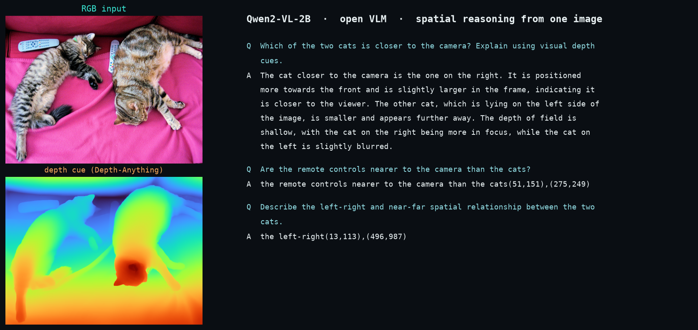
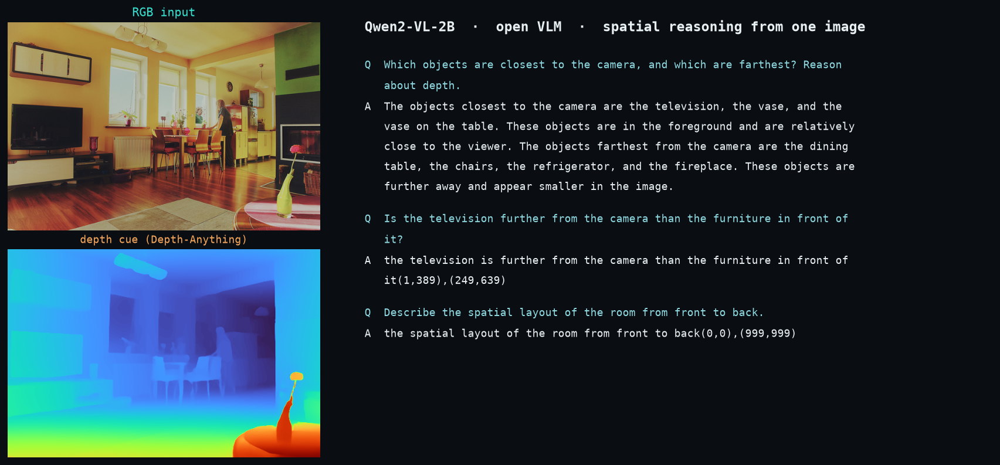

Safety · attacks Topic deep dive · with codeamp; guarantees · with code
Vision-Language-Action models (see, talk, act)
A vision-language-action model (VLA) turns a camera image plus a plain-language instruction directly into robot actions; VLMs are also used as high-level planners and for navigation. This page: the idea, the key 2025 papers with their real code, and hands-on walkthroughs of two cloned codebases.
What it is & why robots use it
Turning seeing-and-talking AI into doing AI
85 papers · decide — how the robot chooses what to do next
The big picture — connecting the dots
For years, AI learned to describe images in words — to look at a photograph and say "there is a red cup on the left." But a robot arm does not need words; it needs numbers: the exact 3D distance to the cup, the angle to approach from, how wide to open its fingers, how much force to apply. These two gaps are real: one between describing a scene and commanding movements, another between flat 2D images and the 3D world a robot moves through. A model trained only on "predict the next word" has no signal for "predict the next motor command." And a model trained on internet photos cannot distinguish whether objects are five centimeters or five meters apart — the depth information is not there. Yet almost every robot control task starts with: take in an image, read a natural-language instruction, and output movements in real numbers. The core problem is that the same model must cross two chasms at once — from perception to action, and from 2D to 3D.
Five ways papers attack this:
① Wire the model to output actions, not words. Take a vision-language model and replace or augment its text output with robot motor commands. Improving Vision-Language-Action Model with Online Reinforcement Learning adds a learning loop so the robot improves by trying; PD-VLA speeds up action-sequence generation by treating it as a parallel computation rather than sequential prediction.
② Teach 3D space as a first-class skill. Add depth images or 3D coordinates to the model's training data so it learns spatial reasoning explicitly, not as an afterthought. SpatialBot fine-tunes on RGB-D images and depth-grounded questions; Towards Generalizable Vision-Language Robotic Manipulation builds policies on 3D object positions rather than flat images.
③ Split the big job into two smaller ones. A single model doing both "what to do" and "how to move" is asked to do two different jobs. Many papers split them: a language model plans sub-steps, a motion planner or policy executes each step. Guiding Long-Horizon Task and Motion Planning with Vision Language Models is the clean example — when a motion planner finds a sub-step infeasible, it tells the language model why, and the model replans.
④ Train the robot to recover when things go wrong. Most data shows tasks succeeding; real robots fail — an object is not where expected, a gripper slips. Closed-Loop Open-Vocabulary Mobile Manipulation with GPT-4V runs a check after each action and replans if it failed; RACER and LERa add failure recovery to the training data or replan from visual observation.
⑤ Learn from human video without collecting robot data. Robot demonstrations are expensive. Human video is free. Motion Tracks represents both human hand and robot end-effector motion in the same pixel-coordinate format so a policy trained on humans transfers to robots; ICRT uses in-context learning — drop a few task examples into a large transformer and it generalizes to new tasks with no retraining.
The throughline: every 2025 paper here is trying to make one or both crossings — teaching a model to output movements, teaching it to reason in 3D space, or splitting the job into pieces each manageable by one model. The papers that split planning from execution have the most robust real-world track records so far; single end-to-end models that perceive 3D accurately, reason about novel tasks, and output correct motor commands at arm speed while running on onboard hardware remain unsolved. Still open: a general policy that works at speed on real robots across diverse tasks without task-specific retraining; reliable 3D reasoning from RGB alone (depth sensors are bulky); and recovery strategies that do not rely on perfect real-time VLM access.
The problem — in depth
In the last few years, AI models learned to look at a photo, read a caption, and answer questions about the scene in plain sentences. They can say "there is a red cup on the table to the left of the laptop." That is genuinely impressive. But saying something and doing something are not the same thing.
A robot arm that needs to pick up that red cup has to know, in real numbers, how far away the cup is, what angle to approach it from, how wide to open its fingers, and how much force to use. None of that comes out of a model that was trained to produce words. The model's whole training reward was "did the next word match the target?" There was no signal for "did the arm land in the right spot?" So the words come out fine but the movements are absent.
There is a second, related gap. These big models were trained on flat photos from the internet. A flat photo has no reliable depth information. The model cannot tell whether two objects are five centimeters apart or five meters apart, which means it cannot reason about whether the robot can reach something, or whether one object is in the way of another. Space, in the physical sense, is nearly invisible to these models.
Together, these two gaps mean that even a very powerful AI that can describe a kitchen scene in perfect prose is still, in the practical sense, blind to three-dimensional space and mute when it comes to motor commands.
This matters because every robot faces the same core challenge: take in an unclear, changing world; decide what to do; move a real body; and do it fast, cheap, safe, and in general situations no one wrote rules for. The deciding step is where these big models were supposed to help — they carry enormous common-sense knowledge about the world, knowledge that is very expensive to build from scratch. But that help only arrives if the model can cross the gap from words to actions and from flat images to real space.
The 85 papers in this topic are all working on that crossing. They differ in which part of the gap they attack and how.
The approaches — how the field actually tackles it
1. Rewiring the model's outputs to produce movements, not words
In plain termsA chatbot was trained to say the next word; a robot needs the next number. Swap the output decoder so the model produces joint angles and finger positions instead of text.
The sub-problemModels trained on words don't naturally output motor commands. Add a new layer that produces robot joint angles and end-effector positions instead of — or alongside — text.
Cycling imitation and experience — Improving Vision-Language-Action Model with Online Reinforcement Learning (ICRA). The robot alternates between collecting experience by trying and learning from that experience to stay stable, then repeats.
Parallel action decoding — PD-VLA: Accelerating Vision-Language-Action Model Integrated with Action Chunking via Parallel Decoding (ICRA). Treats action-block prediction as a parallel math problem instead of sequential, so the robot arm gets commands at the speed it needs without retraining.
A model that outputs movements directly, backed by either continuous self-improvement or faster inference, turns perception-to-action into a real-time loop.
2. Teaching the model to understand 3D space
In plain termsA flat photo tells you what's there, but not how far away it is or whether you can reach it. Feed the model depth images too — the distance to each pixel — so it learns to reason about real 3D distance like your eyes do.
The sub-problemFlat 2D images have no reliable depth. A model trained only on internet photos cannot tell if something is reachable, if one object blocks another, or which direction to approach from. Depth must become a first-class skill, not an afterthought.
Depth-grounded Q&A finetuning — SpatialBot: Precise Spatial Understanding with Vision Language Models (ICRA). Finetunes a VLM on both RGB and depth images, trained on spatial questions (SpatialQA) that force genuine reasoning about distance and 3D layout.
3D object positions as input — Towards Generalizable Vision-Language Robotic Manipulation: A Benchmark and LLM-Guided 3D Policy (ICRA). Reads the actual 3D positions of objects instead of flat pixels, pairs that with language planning and open-vocabulary grounding, and includes GemBench for testing generalization.
Shape-aware collision avoidance — Language-Guided Object-Centric Diffusion Policy for Generalizable and Collision-Aware Manipulation (ICRA). Extracts an object's full 3D shape from point clouds, trains movement generation on it, and adds collision penalties during inference so the robot avoids obstacles without task-specific retraining.
When a model learns to reason about depth, object positions, and 3D geometry, it can reach accurately, avoid collisions, and understand spatial relationships the camera alone cannot provide.
3. Splitting planning and acting into two separate jobs
In plain termsAsking one model to think *and* move at the same time is like asking someone to do calculus while juggling. Split it: one thinks ("get the fork"), another does (moves the arm). When it gets stuck, they talk and replan.
The sub-problemOne model doing both "what to do" and "how to move" is asked to master two different problems at once. Split them: a high-level reasoner plans sub-steps, a motion controller executes each one.
Symbolic planning with feasibility feedback — Guiding Long-Horizon Task and Motion Planning with Vision Language Models (ICRA). A language model generates sub-steps in plain words, a motion planner executes each, and when a step is impossible the planner reports why and the language model replans.
Skill picking across long tasks — BUMBLE: Unifying Reasoning and Acting with Vision-Language Models for Building-wide Mobile Manipulation (ICRA). A VLM reads the scene, picks from a library of pre-built skills, and uses two-layer memory to recall past observations during tasks that can last fifteen minutes across multi-floor buildings.
Object-relative skill coordination — Local Policies Enable Zero-Shot Long-Horizon Manipulation (ICRA). Each skill works in coordinates relative to the object, not the room, so a skill trained in one place works in any other location; a large model chains them in sequence.
Splitting reasoning from motion execution lets each piece specialize: the language model focuses on task logic, the motion planner focuses on geometry and kinematics, and they negotiate when one's plan is impossible.
4. Letting the robot recover when things go wrong
In plain termsYou trained the robot on videos where everything works. But in real life, a gripper slips or a door is stuck. Teach the robot to notice when something's off and figure out a new plan instead of crashing.
The sub-problemReal robots fail: objects are not where expected, grippers slip, doors jam. Training data shows only success. A model must learn to detect failure and replan, turning crashes into recoverable mistakes.
Closed-loop verification and hierarchical recovery — Closed-Loop Open-Vocabulary Mobile Manipulation with GPT-4V (ICRA). After each action, a verifier checks success; if it fails, the system traces back to find where things went wrong and replans from that point using hierarchical recovery (object-level retry, local reobservation, global re-navigation).
Augmented training data with recovery moves — RACER: Rich Language-Guided Failure Recovery Policies for Imitation Learning (ICRA). Takes expert demonstrations, adds synthetic mistakes and the corrective moves to fix them, attaches plain-language failure descriptions, and at runtime a VLM watches and gives correction instructions in speech.
Visual feedback replanning — LERa: Replanning with Visual Feedback in Instruction Following (ICRA). When something goes wrong, the system observes the camera, forms a plain-language explanation of what happened, and rebuilds the plan from that state.
When a robot can detect failure, understand why, and replan, setbacks become normal handled events instead of system crashes.
5. Learning from humans without requiring robot-specific data
In plain termsFilming a human doing a task is free and easy; filming a thousand robot runs costs money and time. Use human videos to teach the main idea, then fine-tune on a handful of real robot runs.
The sub-problemRobot demonstrations are expensive to collect; human video is free. Bridge the gap so a model trained mostly on humans can execute on a robot with only a few real examples.
Pixel tracks as a common format — Motion Tracks: A Unified Representation for Human-Robot Transfer in Few-Shot Imitation Learning (ICRA). Represents both human hand and robot end-effector motion as 2D pixel-position sequences over time, so a policy trained on human video plus a few robot demos can convert those tracks to real 3D movements at runtime.
Video retrieval and imitation — R+X: Retrieval and Execution from Everyday Human Videos (ICRA). Given a task instruction, a VLM searches unlabeled first-person human videos, pulls out the most relevant clips, and the robot imitates the key moves with no additional robot training.
Few-shot in-context learning — ICRT: In-Context Imitation Learning via Next-Token Prediction (ICRA). A transformer predicts the next action or sensor reading from past sequences; at test time, a few task examples are dropped as a prompt and the model executes the new task with no retraining, just like a language model generalizing from few-shot examples.
When the model learns to ground human motion in robot motion and to few-shot generalize, expensive robot data becomes optional and abundant human video becomes the primary training signal.
Where it stands
Systems that split planning from acting are reliable enough to run on real robots in real rooms today, and the ability to describe a failure in plain words and replan around it is now routine in research demos. What remains hard is the full loop: a single model that perceives 3D space accurately, reasons about a novel task, produces correct movements at the speed the arm needs, and does all of this on the onboard computer a real product can afford. Each paper solves one piece; no single system yet closes all the gaps at once.
Mechanism · animated
A vision-language-action model turns image patches and words into one stream of tokens, then reads out the next tokens as robot actions — the same architecture that powers chatbots, pointed at a gripper. See all mechanisms →
● Live run · we actually ran it
A vision-language model, grounding language in an image
Every method on this page uses a VLM as its perception-and-reasoning core. The page's depth-aware example, SpatialBot, has gated weights — so to show the exact same mechanism live we ran an open VLM, Qwen2-VL-2B, on a Colab GPU: feed it one image and a spatial question, read back a grounded answer. Note the genuine depth reasoning on the cats (“the right cat is closer — larger, more in focus”), and the honest quirk that on yes/no questions it sometimes emits grounding-box coordinates instead of prose. The blue-to-orange panel is a depth cue from Depth-Anything — the near-far geometry a SpatialBot-style model fuses in (foreground vase glows near, the room recedes to far).


how we ran it — Qwen2-VL-2B-Instruct · Colab L4 GPU · one RGB image + a Depth-Anything depth map · transformers on a CUDA-13 VM (torchaudio removed to clear an import clash). An open stand-in for the page's gated SpatialBot — same VLM-grounding mechanism the VLA methods depend on.
The key papers & their code
Paper
Conf
Code repo
Core file to read
Run
Guiding Long-Horizon Task and Motion Planning with Vision La
Guiding Long-Horizon Task and Motion Planning with Vision Language Models
The big idea — first principles
The problem. Long-horizon manipulation in kitchens requires hundreds of actions across many objects; a VLM can write abstract goals but cannot verify feasibility, and a classical planner can find motions but cannot understand task intent. The VLM alone plans infeasibly; the planner alone lacks common sense.
The approach. Have a VLM generate symbolic subgoals from the scene and task, feed them to a classical motion planner, and when the planner fails, report what went wrong back to the VLM, which revises its subgoal sequence and retries.
What's unique. The planner gives the VLM real feedback — not just "try again" but "drawer is blocking the reach" — so the VLM can replan intelligently, not blindly.
ICRA 2025 · 19 citations · VLM used as a high-level planner (VLM-guided TAMP)
What it does
VLM-TAMP is a hierarchical planning system in which a vision-language model (VLM — a large model that jointly understands images and text) acts as a high-level planner that generates symbolic subgoals, while a separate classical task-and-motion planner (TAMP — software that finds geometrically and kinematically feasible motion trajectories) converts those subgoals into executable robot actions. The VLM is never trained or fine-tuned; it is prompted at runtime with a scene image and a natural-language cooking goal. When a subgoal turns out to be infeasible for the robot (e.g., the drawer is closed and the VLM did not mention opening it), the TAMP system reports back and the VLM is re-queried for a revised subgoal. This makes it a VLM-as-planner approach, not an end-to-end VLA (vision-language-action) policy.
Sub-approach: VLM used as a high-level planner — the VLM produces symbolic intermediate goals; a classical motion planner handles geometry and kinematics.
The method, in detail
Inputs. At each planning step the system receives: (a) an RGB image of the kitchen scene with objects labeled by bounding-box overlays; (b) a natural-language cooking goal (e.g., "make chicken soup"); (c) the current state of the PDDL (Planning Domain Definition Language — a formal notation listing which predicates, such as "on(pot, stove)" or "open(drawer)", are currently true); and (d) any failure feedback from the previous TAMP attempt.
Backbone. GPT-4 / GPT-4V is used as the VLM backbone via the OpenAI API. No local GPU is needed for the VLM; it is called through HTTP. Anthropic Claude is also supported via an Anthropic API key (configurable). The model is used zero-shot — no fine-tuning.
Subgoal representation. The VLM is prompted to output a sequence of PDDL-format goal predicates (symbolic logical conditions), not raw text actions. For example, it might output (on cooked-chicken pot) as one subgoal. This symbolic grounding is the key design choice: it gives the downstream planner a well-typed, checkable target.
TAMP planner. PDDLStream is the TAMP algorithm used. PDDLStream extends classical PDDL planning by handling continuous-valued parameters (robot joint angles, grasp poses, placement positions) through certified streams — samplers that propose geometric values satisfying declared constraints. FastDownward is the discrete task-planner component inside PDDLStream. IKFast and TracIK handle inverse kinematics (computing joint angles to place the end-effector at a target pose). The TAMP planner takes a VLM-generated subgoal and tries to find a feasible motion plan that achieves it given the current physical state.
Replanning loop. If PDDLStream fails to refine a subgoal into a feasible trajectory within a time budget (N retries), it signals failure back to the VLM with a description of which action failed and why (e.g., "cannot reach object X — a drawer is blocking it"). The VLM is then re-prompted and generates a corrected subgoal sequence. The paper tests several planning modes: sequence (generate all subgoals upfront), actions (generate one action at a time), and -reprompt variants that allow replanning. The reprompt modes improve success on hard tasks by 47–55 percentage points.
No training. The system performs no gradient updates. The TAMP planner is a classical solver; the VLM is frozen. The only "learning" is prompt engineering and the structured output format.
Evaluation. Tested in a simulated kitchen (PyBullet physics engine with the kitchen-worlds environment). Tasks require 30–50 sequential actions and up to 21 interacting objects (pots, ingredients, drawers, stoves, etc.). Robot embodiments: PR2 dual-arm and single-arm. Success rate: 50–100% for VLM-TAMP versus 0% for baselines that execute VLM plans directly without feasibility checking.
Language / framework: Python 3.8+, PyBullet (physics simulator), PDDLStream (task-and-motion planner), FastDownward (discrete planner compiled from C++), IKFast / TracIK (IK solvers, require compilation), Conda environment. VLM calls go to the OpenAI or Anthropic API over HTTP.
Repo structure (top-level of pybullet_planning):
pybullet_tools/ core motion-planning utilities (sampling, collision, grasp)
vlm_tools/ VLM-TAMP integration — START HERE
README.md setup and run instructions
problems_vlm_tamp.py scene-initialization classes (kitchen task definitions)
tutorials/
test_vlm_tamp.py main entry point to run a VLM-TAMP experiment
keys/ API key storage (git-ignored)
pddl_domains/ PDDL domain files (action schemas)
models/ robot URDFs and object meshes
cogarch_tools/ cognitive architecture extras
world_builder/ scene-graph and world-state utilities
robot_builder/ robot configuration helpers
examples/ standalone planning demos
tutorials/ other planning demos
requirements.txt
setup_ikfast.sh
File to open first:vlmtools/tutorials/testvlmtamp.py — it is the experiment driver. It instantiates a kitchen scene from problemsvlmtamp.py, calls the VLM to generate subgoals, feeds them to PDDLStream, and handles the replanning loop. After that, read vlmtools/problemsvlmtamp.py to understand how tasks and PDDL domains are defined.
Key dependencies (install order):
Clone kitchen-worlds (with submodules — it pulls in pybullet_planning and pddlstream).
conda activate kitchen (environment from environment.yml).
pip install pddlgym anytree.
Compile FastDownward and IKFast (shell scripts provided; requires a C++ compiler).
Results land in experiments/mytest/<timestamp>vlm-tamp/; serve with python -m http.server 9000 to view logs.
Needs: A working PyBullet install, compiled C++ solvers, a PyBullet-compatible GPU or CPU (simulation is CPU-based), and an internet connection for VLM API calls. No robotics hardware required.
Reviewing it yourself
Start with vlmtools/README.md (explains the setup) then vlmtools/tutorials/testvlmtamp.py (the experiment loop — roughly 200–400 lines). The code is moderately complex: the VLM prompting logic is self-contained and readable in isolation, but the PDDLStream planner and kitchen-worlds scene graph are large external dependencies with their own learning curves. The PDDL domain files in pddl_domains/ are the clearest way to understand what actions and predicates are available. Difficulty rating: moderate-to-hard for someone unfamiliar with TAMP or PDDL; the VLM integration layer itself is approachable.
Run verdict
Cannot meaningfully run on a CPU-only box without setup work, but VLM calls are CPU-friendly. Specifically:
The PyBullet physics simulation is CPU-based and runs fine without a GPU.
FastDownward and IKFast must be compiled (C++ build tools needed).
The kitchen-worlds environment has complex dependencies; setup on a fresh machine takes 30–60 minutes if everything compiles cleanly.
The VLM component (GPT-4V or Claude) runs remotely via API — no local GPU needed for it.
Training is not involved — this is purely inference + classical planning at runtime.
Verdict: Runnable on a CPU-only Linux box in principle, but setup is non-trivial (C++ compilation of solvers, Conda environment, API keys). Once installed, a single planning episode uses CPU for simulation and makes API calls for VLM inference. No large local model weights to download. If you only want to inspect the VLM prompting logic, you can read and understand it without running anything.
SpatialBot: Precise Spatial Understanding with Vision Language Models
The big idea — first principles
The problem. Vision-language models trained on flat internet photos cannot judge distance or depth — they see a cup but not whether it is reachable by a 30 cm arm.
The approach. Encode both RGB and depth maps as multi-channel images fed to the same VLM, then finetune on depth-grounded questions so the model learns spatial reasoning as a first-class skill.
What's unique. Depth is packed into standard 3-channel uint8 images via bit-shifting, so the existing image encoder runs unchanged; no architecture redesign needed.
ICRA 2025 · 18 citations · Sub-approach: VLM finetuned for spatial perception / benchmark
What it does
Standard vision-language models (VLMs) are trained on 2D images and fail at spatial reasoning tasks — estimating depth, inferring which object is closer, or understanding 3D relationships — all of which are essential for embodied AI applications like manipulation and navigation. SpatialBot extends a VLM to accept both an RGB image and a depth image as input, then finetunes it on a purpose-built dataset of depth-grounded questions (SpatialQA) so the model can answer questions about distances, object positions, and robot action targets. Alongside the model, the authors release SpatialBench, a manually annotated benchmark to evaluate spatial reasoning across six categories. This work sits between a VLM-planner and a benchmark paper: it is primarily a VLM finetuning method that augments a generalist model with spatial perception, validated on both standard VLM benchmarks and real robot pick-and-place tasks.
The method, in detail
Inputs. Each forward pass takes two images: an RGB frame (the normal colour photo) and a depth map of the same scene. The depth map is encoded either as a single-channel uint24 image (one millimetre per count, range 1 mm to 131 m) or as a three-channel uint8 image distributing the millimetre value across the three channels using bit-shifted units (2^0, 2^5, 2^10 mm per channel). This lets the existing image encoder — which expects standard 3-channel 8-bit images — ingest depth without architectural surgery.
Backbone. SpatialBot is a multi-image variant of Bunny, a lightweight open-source VLM family. The vision encoder is SigLIP (384x384 input) or CLIP (336x336 for robot tasks), followed by a small multi-modal projector (MLP) that maps image tokens into the LLM's embedding space. Several LLM backbones are supported: Phi-2 (2.7 B parameters, the primary "3B" variant), Phi-3 (4 B), QWen-1.5 (0.5 B or 4 B), and Llama-3 (8 B). Both images are independently encoded by the same vision encoder and projected, then their token sequences are concatenated before the text tokens and fed into the LLM as a single context.
Action representation (for robot tasks). For embodied experiments, SpatialBot is trained to output 7-DoF delta end-effector actions (ΔX, ΔY, ΔZ, ΔRoll, ΔPitch, ΔYaw, gripper open/close) discretised into 101 bins each (values 0, 0.01, 0.02, …, 1.0). Actions are produced as a special token sequence in the format <<<a1, a2, a3, a4, a5, a6, a7>>>. All other outputs are natural language text.
Training. Two stages:
*Pretraining* of the projector only on 2 M LAION-2B image-text pairs, keeping the vision encoder and LLM frozen.
*Finetuning* of the full model (projector + LLM, with LoRA for larger variants) on the SpatialQA dataset. SpatialQA contains roughly 745 k samples drawn from: Bunny_695k (general VLM instruction data to preserve 2D capability), 20 k depth-understanding QA pairs generated from VG and COCO scenes using GPT-4o, 1.75 k KITTI outdoor samples, 1.5 k NYU Depth v2 indoor samples, 7.5 k RT-X robot scene samples, 15 k SA-1B samples, and 2.9 k 2D-3D-S indoor scenes. Questions are organised into three levels: low-level (read a pixel or region depth value), mid-level (proximity relationships, describe object depth using min/max/mean), and high-level (spatial reasoning, counting, relationship understanding). For robot finetuning, a separate SpatialQA-E subset of 2000 pick-and-place episodes is used, covering basic grasps, spatial instruction following (left/right/up/down, tall/short), obstacle avoidance, and real-vs-printed-object discrimination where depth cues distinguish physical from flat printed objects. Training the Phi-2 variant runs on 8 x A100 GPUs and takes roughly 15 hours. Learning rate is 2e-4 for LoRA weights and 2e-5 for the projector.
SpatialBench. A small but carefully constructed benchmark: 120 scenes, 160 manually annotated question-answer pairs across six categories — depth/proximity estimation, positional relationships, object existence (positive-negative question pairs), counting, reach/touch relationships, and size comparison. Scoring gives bonus points for correctly answering both the positive and negative forms of an existence question.
Language / framework: Python, PyTorch, Hugging Face Transformers, PEFT (LoRA), Accelerate.
Top-level structure:
SpatialBot/
bunny/ # model definition, data loading, serving
serve/
cli.py # RGB-only interactive inference
cli_depth.py # RGB-D interactive inference (key entry point)
SpatialQA_depthmap_instruction/ # dataset preprocessing helpers
eval/ # SpatialBench evaluation scripts
script/
train/
pretrain.sh # stage-1 projector pretraining
finetune_lora.sh # LoRA finetuning (most common path)
finetune_full.sh # full-parameter finetuning
eval/
lora/ # evaluation scripts for LoRA checkpoints
evaluation_lora.md
evaluation_embodiment.md
full/
merge_instruction.md # how to merge LoRA weights into base model
pyproject.toml
README.md
File to open first:bunny/serve/cli_depth.py — this is the end-to-end inference path for the core RGB-D contribution. It shows exactly how the depth image is loaded, encoded, and passed alongside the RGB image to the model. The model forward pass and tokenisation are visible here without needing to follow training code.
Key dependencies:torch, transformers, peft, accelerate, pillow, numpy. Depth images are standard 16-bit grayscale PNG files (converted internally to 3-channel).
No simulator required for inference. The robot experiments use a Franka Research 3 arm but evaluation scripts run offline against recorded episodes. SpatialBench evaluation is pure offline QA.
Pretrained checkpoints for all variants (Phi-2 3B, Phi-3 4B, QWen 4B, Llama-3 8B) are on Hugging Face at RussRobin/SpatialBot-3B and related handles. SpatialQA and SpatialQA-E are also on Hugging Face.
Start by reading README.md for dataset download links and checkpoint names, then open bunny/serve/clidepth.py to see the full inference loop — it is short and readable. The architecture logic (encoder, projector, concatenation) is inherited from Bunny; look in bunny/model/ for the projector and multi-image handling. The training scripts in script/train/ are shell wrappers calling Hugging Face Trainer, so they are easy to parse. Dataset preprocessing is the most opaque part — the SpatialQAdepthmap_instruction/ helpers show how depth maps are converted to the three-channel format.
Code difficulty: moderate. The Bunny codebase follows the LLaVA code style, which is familiar if you have read any LLaVA-family code. The main novelty (dual-image input, depth encoding) is localised to a few files. A researcher comfortable with Hugging Face Transformers and LoRA workflows can follow the full stack in a few hours.
Run verdict
On a CPU-only machine: Inference with the 3B (Phi-2) checkpoint is feasible at low speed — the model fits in CPU RAM (roughly 6 GB in float16, more in float32) and Transformers will fall back to CPU if no GPU is found. A forward pass on a CPU will take tens of seconds per query rather than under a second. Training is not realistic on CPU: even LoRA finetuning on 745 k samples requires a GPU with at least 24 GB VRAM for the 3B variant, and the paper used 8 x A100s. SpatialBench evaluation (just running the model on 160 QA pairs) would run on CPU in a few minutes but would be slow. No simulator is needed for any of this — the depth images are plain PNG files you can supply yourself (from an RGB-D camera like a RealSense, or from any depth estimation model).
Closed-Loop Open-Vocabulary Mobile Manipulation with GPT-4V
The big idea — first principles
The problem. A VLM can describe a scene and plan a task, but real robots fail — objects are not where expected, grippers slip. Replanning from textual failure descriptions is slow and unreliable.
The approach. Use GPT-4V to generate Python code that calls robot primitives, run the code, check whether it succeeded with a multi-level verifier, and if it failed, inject the failure reason back into the prompt so GPT-4V rewrites the code.
What's unique. Failures trigger a three-level recovery (object-level retry, local re-observation, global re-navigation) before re-querying the VLM, so simple mistakes are fixed without invoking the expensive LLM.
ICRA 2025 · 12 citations · VLM-as-high-level-planner (code-generating, closed-loop)
What it does
COME-robot is a real-world mobile manipulation system in which GPT-4V acts as the brain: it reads camera images and a natural-language task instruction, generates Python code that calls a robot's primitive skill API, and uses a closed-loop feedback mechanism to detect failures and replan. It does not train a neural policy at all — the robot's low-level motion (navigation, grasping, placing) is handled by hand-engineered primitives; GPT-4V supplies the high-level task logic. Sub-approach: VLM used as a high-level planner that generates executable code and drives closed-loop replanning.
The method, in detail
Inputs. The system receives (a) a free-form natural-language instruction (e.g. "bring me the red cup from the desk"), (b) RGB-D images from a base-mounted wide-angle camera for scene-level navigation and furniture mapping, and (c) RGB-D images from a wrist-mounted end-effector camera for close-range object-level perception and grasp verification.
Backbone. GPT-4V (OpenAI's multimodal GPT-4 model with vision) is called via API. There is no fine-tuning or additional training of any model.
Perception stack. A multi-level open-vocabulary perception module builds two map layers:
*Global object map*: furniture locations (tables, sofas, shelves) detected and localized with the base RGB-D camera plus LiDAR-assisted navigation.
*Local object map*: per-receptacle point clouds of small objects (cups, bowls, etc.) built by the wrist camera when the arm is positioned above a surface. Objects are identified open-vocabulary by querying GPT-4V with a wrist-camera snapshot.
SAM-2 (Segment Anything Model 2) tracks object state across steps to detect whether an object has been moved or displaced.
Action representation and production. GPT-4V is prompted with a system prompt that includes: the task description, a description of all available primitive APIs, current perception state (furniture map, objects found), and guidelines for structured output. The model outputs a JSON object with two fields: "reason" (chain-of-thought explanation) and "code" (a Python snippet). That Python snippet is executed directly on the robot by calling primitives such as exploreglobal(), explorelocal(), navigate(target), grasp(objectid), place(location), and reportobservation(). This is code-as-action: the language model is a code generator, not an end-to-end policy.
Closed-loop feedback mechanism. After each primitive executes, a two-part verifier checks:
*Feasibility verification*: did the action make sense given the current state (e.g. can the target object be reached)?
*Success verification*: did the action succeed? Evidence comes from wrist-camera images, gripper force/position feedback, and object-map consistency.
If verification fails, a hierarchical Plan Restorer attempts recovery at three levels:
*Object-level*: retry grasp with a re-estimated pose.
*Local-level*: rebuild the local object map (the object may have moved on the surface).
*Global-level*: navigate to an alternative furniture location (the object may not be where expected).
GPT-4V is re-queried after a failure description is injected into the prompt, so it can revise its plan with knowledge of what went wrong.
Training / fine-tuning. None. The entire system is prompt-engineered. GPT-4V is used frozen via API. The primitive skills (navigation, grasping, placing) are pre-existing modules implemented with classical robotics (point-cloud-based grasp planning, differential-drive navigation stack). The paper does not specify exact grasp planner, but point clouds from RGB-D are used to estimate 6-DoF grasp poses.
Hardware. A four-wheeled differential-drive mobile base carrying a 7-DoF Kinova Gen3 arm with a parallel-jaw gripper. The base has a wide-angle RGB-D camera (for global mapping), LiDAR, and IMU. The end-effector has a wrist RGB-D camera. The paper also mentions experiments with a Unitree B2 quadruped + Z1 arm.
Evaluation. Eight real-world tasks: four mobile manipulation tasks (object across rooms; 5 trials each) and four tabletop manipulation tasks (10 trials each). Compared to a non-closed-loop GPT-4V baseline and an open-loop LLM baseline. COME-robot achieves ~65% success on mobile tasks vs. ~30% baseline and ~75% on tabletop tasks vs. ~47.5% baseline.
The code
Repo URL. No public GitHub repository has been released. The paper's arXiv page (arxiv.org/abs/2404.10220) and the project website (come-robot.github.io) both exist but link to no code. The project page has a "Code" button that does not resolve to a GitHub repository as of the review date.
Language / framework. From the paper's description: Python. The robot skills API is written in Python and called directly from GPT-4V-generated code snippets. Navigation likely uses ROS (Robot Operating System) under the hood given the Kinova Gen3 and LiDAR integration.
Repo structure. Not publicly available; cannot be verified.
Key file to open first. Not applicable — no repo.
Dependencies (inferred). OpenAI Python SDK (for GPT-4V API calls), a Kinova Gen3 driver (likely kortexapi or ROS roskortex), SAM-2 (Meta's Segment Anything 2), an RGB-D point cloud library (Open3D or PCL), and a navigation stack (likely ROS Navigation or Nav2).
Simulator. No simulator is used or needed; all experiments are in the real world.
Dataset. No dataset; the system is zero-shot at runtime.
GPU. The robot's onboard compute runs the perception stack (SAM-2 tracking requires a GPU for real-time inference). GPT-4V is accessed by API, so no local GPU for the language model itself.
How you would run it. You cannot run the official implementation — it is not released. A faithful re-implementation would require: an OpenAI GPT-4V API key, a Kinova arm or a simulated equivalent (e.g., in PyBullet or Isaac Sim), a SAM-2 checkpoint, and a ROS navigation stack. The system loop is: (1) call explore_global() to build the furniture map; (2) call GPT-4V with the instruction + map state to get Python code; (3) exec() the code against the skill API; (4) call the verifier; (5) if failure, inject failure summary into context and re-query GPT-4V.
Reviewing it yourself
What to read first. Read the arXiv paper sections in this order: Figure 2 (system pipeline overview), Section III-A (Perception and Reasoning Module), Section III-B (Closed-Loop Feedback and Restoration), then the prompt design details in the appendix (if published). The paper is clearly written and the architecture diagram makes the data flow easy to follow.
How hard is the code to follow. Since there is no public code, you would be reconstructing from the paper. The paper is well-specified enough that the high-level loop is clear, but the exact prompt templates, the grasp planning implementation, and the SAM-2 integration details are not fully described. If a repo were released, the most complex piece would be the Plan Restorer's hierarchical failure recovery logic — the three-level fallback (object → local → global) involves non-trivial state bookkeeping. The GPT-4V prompt engineering (system prompt + structured JSON output parsing) would be the first thing to study.
Run verdict
CPU-only box: no. Three blockers:
GPT-4V requires an OpenAI API key and sends images to an external API — network and cost, not compute, but you cannot use it offline.
SAM-2 (object tracking) requires a GPU for real-time inference; it will technically run on CPU but at roughly 0.1 fps, making it impractical.
The system requires a real robot (Kinova Gen3 or equivalent) or a full physics simulator with arm support — there is no lightweight demo or pre-recorded rollout mode described.
For pure exploration: you could call GPT-4V with a static image and hand-written perception state to see its code-generation output, but you cannot run the full closed-loop system on CPU alone. Training is not applicable — the system is fully prompt-driven with no gradient updates.
Improving Vision-Language-Action Model with Online Reinforcement Learning
The big idea — first principles
The problem. VLA models trained only on imitation learn nothing from environment interaction because RL on large backbones causes training instability and is too expensive.
The approach. Freeze the heavy VLM backbone and train only the lightweight action head via online RL, then periodically unfreeze the full model (via LoRA) on the union of old + new successful data to consolidate without forgetting.
What's unique. Freezing the VLM during RL caches its latent output, so inference runs at arm speed without re-encoding the image at every step.
ICRA 2025 · 10 citations · VLA end-to-end policy finetuning via RL
What it does
iRe-VLA addresses a specific gap: VLA models trained by supervised imitation on expert demonstrations cannot learn from environment interaction because directly applying online RL to a large vision-language backbone causes training instability and is too computationally expensive on most hardware. The paper's answer is to split the model into parts: freeze the heavy VLM backbone during RL (so only the lightweight action head trains online), then periodically unfreeze the full model via LoRA (low-rank adaptation) for a supervised stabilization pass on the expanded dataset. This alternation — RL for exploration, supervised learning (SL) for consolidation — is the iRe-VLA loop. It is a VLA policy that outputs actions end-to-end, trained and continuously improved through environment interaction rather than only offline imitation.
The method, in detail
Inputs. At each timestep the model receives a single RGB image from the wrist or overhead camera and a natural-language task instruction. There is no depth, no proprioception in the visual branch (proprioceptive state is handled separately in the real-robot SERL setup).
Backbone. BLIP-2 (3 billion parameters) is used as the frozen visual-language backbone. BLIP-2 takes the image and instruction and produces a sequence of hidden-state vectors h of shape (m × d), where m is the number of output tokens and d is the embedding dimension.
Action head. Two lightweight modules are added on top of BLIP-2:
A *token learner* — a small attention-style module that compresses the m token vectors down to a single d-dimensional vector h'.
An *MLP action head* — maps h' to the action vector a in R^da. For the real robot, da covers end-effector pose deltas (x, y, z, roll, pitch, yaw) plus a binary gripper open/close signal. For simulation, the action space matches MetaWorld's or Franka Kitchen's joint/end-effector convention.
A *critic head* mirrors the action head structure but outputs a scalar value estimate (used during PPO).
Training — three-stage loop.
Stage 0 (once). Standard supervised fine-tuning on the expert demonstration dataset (50 trajectories per task for MetaWorld, ~5 tasks for Franka Kitchen, ~2,000 teleoperation trajectories for the real Panda). Loss is mean-squared error between predicted and demonstrated actions. The full model (VLM + action head) is updated here.
Stage 1 (per new task). Online RL with the VLM parameters frozen. Only the action head and critic head are updated. The RL algorithm is PPO (proximal policy optimization) for simulation; for the real robot, it switches to SACfD (soft actor-critic from demonstrations), which interleaves rollouts from a 20-trajectory demonstration buffer (50% sampling) with live environment data. Reward is binary sparse: R=1 on task success, R=0 otherwise. Because the VLM is frozen, inference can cache the VLM's latent output, drastically cutting per-step compute (the image+instruction encoding runs once; only the action head runs at control frequency).
Stage 2 (per new task, after Stage 1). Supervised learning on the union of the original expert dataset and the successful trajectories collected in Stage 1. Here, LoRA (low-rank adaptation) is applied to the VLM so the full model can adapt without catastrophic forgetting. Both the VLM (via LoRA) and the action head are updated. This stage stabilizes the policy, prevents the instability that pure RL on a large model causes, and propagates successful behaviors learned for new tasks back into the shared representation.
Stages 1 and 2 repeat for each new task in sequence, so the model grows richer across a task curriculum without retraining from scratch.
Benchmarks. MetaWorld (25 expert tasks + 5 RL new tasks + 10 held-out unseen tasks with object shape/color/position variations); Franka Kitchen (5 expert tasks + 5 RL new tasks + 2 unseen color-variant tasks); real Franka Panda (pick, place, button-press, cable-route, drawer, evaluated for new-task learning speed vs. SERL baseline).
Compute. Stage 1 (online RL) runs on a single NVIDIA RTX 4090. Stage 2 (supervised update) runs on 4 NVIDIA A100 GPUs. Real-robot training takes roughly one hour per new task.
The code
Repo URL. No public code repository has been released by the authors. The paper does not reference a project page or GitHub link, and a search of the first author's GitHub profile (github.com/Robert-gyj, which hosts their later Ctrl-World work) finds no iRe-VLA repository. No repo URL is included here because none was found.
Dependent external frameworks.
SERL (github.com/rail-berkeley/serl) — the software suite the real-robot experiments are built on top of. SERL provides the SACfD implementation, the actor/learner distributed training architecture, and interfaces to the Franka robot via serlfrankacontrollers. SERL is written in JAX/Flax.
MetaWorld and Franka Kitchen — standard MuJoCo-based simulation benchmarks (Python, mujoco-py or dm_control).
BLIP-2 — available via Hugging Face transformers (PyTorch).
Framework. The paper is PyTorch-based (BLIP-2 and LoRA are both PyTorch); the real-robot RL layer inherits SERL's JAX stack for the SAC update, meaning the full real-robot pipeline spans both frameworks.
What to look for first. Because there is no released repo, the closest entry point is:
SERL's examples/ directory for the real-robot SACfD loop.
Hugging Face BLIP-2 (Salesforce/blip2-opt-2.7b) for the backbone loading pattern.
The iRe-VLA paper's Appendix (arXiv:2501.16664) for PPO hyperparameters and LoRA configuration details.
Simulator / dataset / GPU needed.
Simulation: MuJoCo (MetaWorld or Franka Kitchen), free to install.
Dataset: MetaWorld and Franka Kitchen expert demos can be self-collected via scripted policies bundled with each benchmark.
GPU: Stage 2 (SL update) requires multiple A100s as described. Stage 1 (online RL, frozen VLM) fits on a single 24 GB GPU (4090-class).
Reviewing it yourself
Since there is no code release, "reviewing" means reading the paper and cross-referencing SERL's codebase. Start with Section 3 of the paper (the iRe-VLA algorithm box and Figure 2 diagram) to understand the Stage 0/1/2 loop, then read Section 4's ablations, which isolate the contribution of each stage. The method is not conceptually complex — it is essentially curriculum RL with frozen-backbone stabilization — but the engineering details (caching VLM latents, SACfD demonstration buffer ratios, LoRA integration) require reading carefully.
Difficulty: moderate. The ideas are clear; the code complexity is in integrating BLIP-2 (PyTorch) with SERL (JAX) across actor and learner nodes. Anyone comfortable with both Hugging Face and SERL can reconstruct it; anyone who only knows one of those frameworks will need to learn the other.
Run verdict
CPU-only box: no. Even inference from the BLIP-2 3B backbone is slow enough on CPU to be impractical for control loops (multi-second per frame). RL training requires at minimum one 24 GB GPU for the frozen-VLM online stage, and the supervised update stage requires 4 A100s (or equivalent). There is no small checkpoint released, no API-based option, and no quantized CPU-friendly variant described. If you wanted to run just the BLIP-2 forward pass on CPU as a test, that is technically possible with Hugging Face transformers, but it is not running iRe-VLA — the action head and training loop are not released.
Open-Nav: Exploring Zero-Shot Vision-and-Language Navigation in Continuous Environment with Open-Source LLMs
The big idea — first principles
The problem. Proprietary LLMs (GPT-4) are unreliable for safety-critical navigation and have latency/cost issues. Open-source models are free but have not been tested as navigation backbones.
The approach. Replace closed-source LLMs with locally hosted 70B open-source models (Llama, Qwen, Gemma), run them via Ollama, and ground them with a lightweight 3B spatial VLM so they reason over depth.
What's unique. Open Llama3.1-70B at 4-bit quantization reaches 16% success on Habitat R2R-CE, within 3% of GPT-4, proving open models are viable for VLN.
ICRA 2025 · 9 citations · VLM used as a high-level planner / vision-language navigation
What it does
Open-Nav is a zero-shot vision-and-language navigation (VLN) system that replaces proprietary closed-source LLMs (such as GPT-4) with locally hosted open-source LLMs for navigating photorealistic 3D environments described by natural-language instructions. The agent follows step-by-step language instructions through continuous 3D spaces without any fine-tuning on navigation datasets — it is zero-shot at inference time. The sub-approach is a VLM used as a high-level planner: the LLM reasons over panoramic perceptual summaries and selects among candidate waypoints, while separate lightweight models handle low-level perception and waypoint generation.
The method, in detail
Inputs. At each navigation step the agent collects a full panoramic sweep: 12 RGB snapshots and 12 aligned depth frames taken every 30 degrees around the agent (244×244 pixels RGB, 256×256 depth). These are not fed raw to the LLM; instead two specialist modules first convert them to language-friendly summaries.
Scene perception modules.
RAM (Recognize Anything Model): detects every visible object in the scene, classifies each one, and estimates its 3D spatial coordinates relative to the agent.
SpatialBot (a fine-tuned 3B-parameter vision-language model trained on RGB-D pairs): produces natural-language descriptions that emphasize spatial relationships and object distances, consuming both the RGB and depth images.
The outputs of RAM and SpatialBot are concatenated into a single text passage describing "what is around me and how far."
Waypoint prediction. A pretrained transformer-based waypoint predictor takes the 12 RGB + 12 depth pairs, extracts features with two ResNet-50 encoders (one per modality), fuses them, and passes the result through a two-layer transformer. The head outputs a heatmap over the panorama; non-maximum suppression identifies K navigable candidate locations. Each candidate is represented as an (angle, distance) pair — a discrete action space of short-horizon waypoints, not raw joint commands.
Spatial-temporal chain-of-thought (CoT) reasoning. The LLM navigator receives a structured prompt containing the language instruction, the scene description from RAM+SpatialBot, the K candidate waypoints, and a maintained history of prior steps. It reasons in three explicit stages:
Instruction comprehension: decomposes the full route instruction into sub-actions ("turn left at the door", "go up the stairs") and identifies landmarks.
Progress estimation: reviews the navigation history — checks which landmarks have been verified, tracks directional and sequential progress, estimates where in the instruction sequence the agent currently is.
Decision making: integrates the candidate waypoints, scene observations, and progress estimate to select the single best next waypoint.
No gradient computation occurs at inference; the LLM is prompted entirely in text with the structured multi-stage prompt.
LLMs evaluated. Four open-source models are tested via the Ollama serving framework (which handles quantization and local inference): Llama3.1-70B-instruct (4-bit quantized), Qwen2-72B-instruct (4-bit quantized), Gemma2-27B-instruct (FP16), and Phi3-14B-instruct (8-bit quantized). Llama3.1-70B achieves the best navigation results at 16% success rate on R2R-CE Val Unseen, compared to 19% for the GPT-4 variant.
Evaluation benchmarks. The paper evaluates on R2R-CE (Room-to-Room in Continuous Environments), a standard VLN benchmark running inside the Habitat simulator on Matterport3D reconstructed scenes. A 100-episode subset (OpenNavR2R-CE100) is used for the zero-shot evaluation to keep LLM API cost manageable. Real-world tests are conducted in an office, lab, and game room.
Language/Framework: Python 3.8. Depends on Habitat-Lab v0.1.7 and Habitat-Sim for 3D environment simulation. PyTorch for the waypoint predictor and ResNet encoders. Ollama for serving open-source LLMs locally.
First file to open:run.py — it orchestrates the full loop: load the Habitat environment, initialize the waypoint predictor, run RAM and SpatialBot on each observation, build the CoT prompt, call the LLM (via Ollama), parse the waypoint selection, and step the simulator.
Dependencies: Habitat-Lab 0.1.7, Habitat-Sim (must be installed from source following Habitat's own setup guide), PyTorch, RAM, SpatialBot-3B, Ollama (for LLM serving). All must be assembled manually; no single-command install exists.
Simulator: Habitat-Sim is mandatory. Matterport3D scene files (.glb meshes) must be downloaded separately under a license agreement from the Matterport3D dataset.
Dataset: The R2R-CE dataset and the 100-episode Open-Nav subset must be downloaded (Google Drive link in README) and placed in data/datasets/R2RVLNCEv1-2preprocessed/valunseen/.
How to run:
conda create -n opennav python=3.8
# install Habitat-Lab 0.1.7 and Habitat-Sim per official docs
pip install -r requirements.txt
# download all data, scenes, and model weights per README
ollama serve # in a separate terminal, pull the LLM (e.g., ollama pull llama3.1:70b)
bash run_OpenNav.bash --llm Llama3.1
GPU requirements: Not stated explicitly, but 4-bit quantized Llama3.1-70B needs roughly 40–48 GB VRAM or can be offloaded across CPUs via Ollama with significant slowdown. The waypoint predictor and SpatialBot-3B each require a GPU for reasonable speed. A consumer GPU (24 GB) is tight even for quantized inference; 2×24 GB or A100-class is more realistic.
Reviewing it yourself
Start with run.py. The CoT prompt construction is the conceptual core — look for where RAM output and SpatialBot descriptions are assembled into the instructioncomprehension / progressestimation / decisionmaking prompt template. Then read waypointprediction/ to understand the transformer heatmap architecture. The Habitat environment wrappers in vlnce_baselines/ are largely borrowed from the VLN-CE codebase and are less novel; skim those last.
The code is moderately easy to follow. The navigation loop is linear and well-structured. The main complexity is the multi-model pipeline — you need to understand four separate systems (Habitat, RAM, SpatialBot, the LLM) before the full picture clicks. No custom training loop exists; everything is zero-shot inference, which makes the code shorter and easier to audit than a training codebase.
Run verdict
A CPU-only box cannot practically run this system. There are three blockers: (1) Habitat-Sim renders Matterport3D meshes in real time and requires a GPU (or at minimum a powerful CPU with significant rendering overhead); (2) SpatialBot-3B and the waypoint predictor need GPU for reasonable inference speed; (3) Llama3.1-70B at 4-bit quantization needs ~40 GB of VRAM or very large RAM with CPU offload — on CPU it would take minutes per navigation step, making any evaluation across 100 episodes infeasible. With Ollama's CPU offload mode, LLM inference alone would run but at ~0.5–2 tokens/second, which combined with Habitat rendering makes the full pipeline impractical. A machine with a single 80 GB GPU (A100) or two 40 GB GPUs is the realistic minimum.
ReMEmbR: Building and Reasoning Over Long-Horizon Spatio-Temporal Memory for Robot Navigation
The big idea — first principles
The problem. After a robot explores an environment, asking it "where did I see an object" requires searching through hours of video — humans solve this with memory and language, robots do not.
The approach. Offline: caption video clips with a VLM and embed captions into a vector database alongside pose and time. Online: let an LLM agent query three independent retrieval indices (text, position, time) iteratively to answer spatial-temporal questions.
What's unique. One Milvus collection holds three separate embedding spaces (caption, position, time) so a single memory entry supports semantic search, nearest-neighbor spatial queries, and temporal QA without duplication.
ICRA 2025 · 8 citations · VLM used as a high-level planner (retrieval-augmented navigation QA)
What it does
ReMEmbR is a zero-shot navigation system that lets a robot answer natural-language questions about its entire deployment history — where an object was seen, when an event occurred, how long ago something happened. It belongs to the sub-approach of a VLM used as a high-level planner: no end-to-end action policy is learned; instead a VLM (VILA) captions the video stream offline into a searchable memory, and an LLM agent queries that memory at runtime to produce position or time answers that feed a classical navigation stack (ROS2 Nav2). The paper also introduces NaVQA, a long-horizon navigation video question-answering dataset annotated with spatial, temporal, and descriptive questions.
The method, in detail
Inputs. A single front-facing camera (plus odometry/pose from the robot's localization stack) and a natural-language question posed at query time. No depth or multi-camera rig is required for the core system; the Nova Carter deployment also uses 3D LiDAR for AMCL localization, but that feeds Nav2, not the memory model.
Memory building phase (offline, runs during or after deployment).
The video stream is segmented into 3-second windows; 6 frames per window are sampled, giving an effective rate of 2 FPS.
VILA1.5 (a video-language model; primary experiments use the 13B variant, with 8B and 3B also tested) processes each 6-frame clip and produces a natural-language caption describing what the robot saw.
The caption is embedded with mxbai-embed-large-v1 (a text embedding model) into a dense vector.
Each entry stored in the vector database is a triplet: (captionembedding, robotposition [x,y,z,theta], timestamp). The vector database is Milvus, backed by quantized approximate nearest-neighbor (ANN) indexing, which keeps retrieval sub-second even over millions of entries.
Querying phase (online, at question time).
A LangGraph state machine drives an LLM agent (GPT-4o in the primary experiments; Codestral-22B, Command-R, and Llama-3.1-8B also tested). The agent has exactly three retrieval tools exposed as LangChain StructuredTool objects:
fl(object: str) — text search: embeds the query string and retrieves the *m* nearest caption entries by cosine similarity.
fp((x,y,z)) — position search: retrieves the *m* entries whose stored coordinates are closest to a given point.
ft("HH:MM:SS") — time search: retrieves the *m* entries closest to a given timestamp.
The agent calls up to three rounds of retrieval (configurable); each round accumulates retrieved (caption, position, time) tuples into its context. A should_continue conditional edge decides whether to call another retrieval round or move to the generate node, which formats the final answer as a JSON dict with keys for text, position, time, and duration. A spatial answer (an (x,y,z) coordinate) is handed directly to ROS2 Nav2 as a navigation goal.
Nothing is trained. All components — VILA, mxbai-embed-large-v1, and the LLM — are used as pretrained foundation models with prompting only. The system is entirely zero-shot.
Hallucination note. No explicit mitigation mechanism is described. Grounding to stored captions (rather than free generation) provides implicit containment, but the paper acknowledges cases where a quantized 3B captioning model confused visually similar objects (e.g., soda machine vs. water fountain).
Deployment hardware. For the real-robot demo (Clearpath Nova Carter): memory building runs on a Jetson Orin 32GB using quantized VILA-3B; the LLM query calls GPT-4o via the OpenAI API from the cloud; speech input is transcribed by WhisperTRT (optimized Whisper for Jetson).
Language / framework: Python 3; PyTorch (via VILA); LangGraph + LangChain for the agent state machine; Milvus for the vector store; Gradio for the offline demo UI; ROS2 / rclpy for the robot demo.
File to open first:remembr/agents/remembragent.py. It contains the full ReMEmbRAgent class: llmselector routes between OpenAI, NVIDIA NIM, and Ollama; setmemory generates the three StructuredTool wrappers and compiles the LangGraph graph; the four graph nodes (agent, action, generate, and the shouldcontinue conditional) are all defined here. Reading this file gives you the complete query-time logic.
Dependencies:
VILA (cloned separately from https://github.com/NVlabs/VILA; vila_setup.sh sets this up in a conda env called remembr)
Milvus standalone (Docker; launched via launchmilvuscontainer.sh)
ROS2 rclpy (only for the robot demo; not needed for the offline chat demo)
How to run the offline demo:
# 1. Clone VILA and set up conda env
mkdir deps && cd deps
git clone https://github.com/NVlabs/VILA.git
cd .. && ./vila_setup.sh remembr
conda activate remembr
# 2. Install Python deps
python -m pip install -r requirements.txt
# 3. Start Milvus
curl -sfL https://raw.githubusercontent.com/milvus-io/milvus/master/scripts/standalone_embed.sh \
-o launch_milvus_container.sh
bash launch_milvus_container.sh start
# 4. Install an LLM backend (e.g. Ollama with command-r)
curl -fsSL https://ollama.com/install.sh | sh
ollama pull command-r
# 5. Run the Gradio demo
cd examples/chat_demo
python demo.py
You also need a ROS bag file of a robot deployment to feed the memory building phase; eval.md describes downloading 7 sequences (IDs 0, 3, 4, 6, 16, 21, 22) of the CODa dataset, totaling ~335 GB after processing.
Reviewing it yourself
What to read first. Start with remembr/memory/memory.py (the MemoryItem struct — tiny, takes 1 minute) then remembr/memory/milvusmemory.py (the three retrieval methods — straightforward Milvus queries). Then read remembr/agents/remembragent.py top to bottom; the LangGraph plumbing is the most complex part but is well-compartmentalized. Finally, look at examples/chat_demo/demo.py to see how the pipeline is assembled end-to-end.
Difficulty. Moderate. The memory module is clean and easy. The agent file requires familiarity with LangChain's StructuredTool pattern and LangGraph's state machine API (nodes, edges, TypedDict state), which have their own abstraction overhead. The VILA integration (video captioning) is the least transparent part — it is invoked through VILA's own API and is easiest to treat as a black box that takes a list of frames and returns a string caption. There is no custom training code to read. Someone comfortable with LangChain and basic vector search can follow everything in a few hours.
Run verdict
Cannot train or evaluate on a CPU-only machine. VILA1.5 (even the 3B variant) requires a CUDA GPU for inference at any practical speed; running it on CPU is technically possible with HuggingFace but would be extremely slow (minutes per 3-second clip). The Milvus vector database and the LangGraph agent are CPU-friendly.
Partial CPU run is feasible if you skip VILA (use pre-built memory from someone else's bag) and use the OpenAI API for the LLM: in that case milvusmemory.py and remembragent.py run fine on CPU, and the embedding model (mxbai-embed-large-v1 via HuggingFace) is small enough to run on CPU with ~10-second latency per query. The offline Gradio demo would work in this mode if you have a pre-populated Milvus collection and an OpenAI API key.
Full pipeline (building memory from video) needs a GPU. NVIDIA recommends a Jetson Orin 32GB for the edge case or a workstation GPU for the 13B model. An A100 or similar is needed to run VILA1.5-13B at the paper's 2 FPS rate. The NaVQA evaluation additionally requires ~500 GB of storage for the CODa dataset.
Towards Generalizable Vision-Language Robotic Manipulation: A Benchmark and LLM-Guided 3D Policy
The big idea — first principles
The problem. Robot manipulation generalizes poorly to novel objects and placements; benchmarks are small and do not measure realistic generalization. Long-horizon tasks fail because policies overfit to training distributions.
The approach. Build GemBench, a sim benchmark with four difficulty levels (novel placements → novel objects → novel articulated objects → long-horizon). Propose 3D-LOTUS: predict end-effector waypoints from point clouds conditioned on language.
What's unique. 3D-LOTUS++ wraps the policy in an LLM planner that decomposes instructions into primitives and grounds object references via open-vocabulary detection, so the policy sees semantic roles instead of raw pixels.
ICRA 2025 · 8 citations · VLM-as-high-level-planner + generalist-policy benchmark
What it does
This paper introduces GemBench, a simulation benchmark for measuring how well language-conditioned robot manipulation policies generalize to novel placements, novel objects, and long-horizon multi-step tasks — four levels of increasing difficulty. Alongside the benchmark, the authors propose 3D-LOTUS, a policy that predicts robot end-effector waypoints directly from a 3D point cloud of the scene conditioned on a natural-language instruction, and 3D-LOTUS++, which wraps 3D-LOTUS inside a two-tier system: an LLM decomposes the instruction into primitive sub-goals, and an open-vocabulary VLM grounds the objects named in each sub-goal before 3D-LOTUS executes the motion.
Sub-approach: generalist-policy benchmark + finetuning method (the benchmark is the primary contribution; 3D-LOTUS is a trained specialist policy; 3D-LOTUS++ uses a VLM as a high-level planner above it).
The method, in detail
Inputs. Four calibrated RGB-D cameras — front, left shoulder, right shoulder, and wrist — each at 256×256 pixels, plus a natural-language task instruction (e.g., "pick up the red cup and place it in the drawer").
Scene representation. The four depth images are unprojected into 3D using known camera intrinsics and extrinsics, then merged into a single point cloud in world coordinates. The cloud is voxelized at 1 cm³ resolution (one point per voxel). Background, table surface, and robot-arm points are masked out using workspace bounds and CAD models of the robot. Each surviving point carries XYZ position, RGB color, and height above table as features.
Backbone. The point cloud backbone is Point Transformer v3 (PTV3), a hierarchical U-Net with downsampling and upsampling stages built from transformer layers. There is no pretrained VLM inside the core policy. Language is encoded separately with the CLIP text encoder; the resulting text vector is broadcast and concatenated into the point features before the PTV3 processes them.
Action representation and prediction. Actions are end-effector waypoints: 3D gripper position, 3D rotation (Euler angles), and a binary gripper open/close state. Position is discretized into 30 bins per axis; rotation into 72 bins per axis (5° each). The model ends in three classification heads — one per spatial dimension for position, one per axis for rotation, one for open/close — trained with cross-entropy loss. Inverse kinematics converts the predicted waypoint into joint commands. There is no diffusion head or flow matching.
Training. 100 expert demonstrations per task variation (3,100 total for the training split), batch size 8, Adam optimizer, initial learning rate 1×10⁻⁴ with linear decay, 150,000 iterations (~11–14 hours on one A100 80 GB). No pretraining on internet-scale data; training starts from random weights on the non-CLIP parts.
3D-LOTUS++ (the planning-augmented version). A frozen LLaMA-3-8B receives the full instruction and decomposes it into a sequence of six action primitives: grasp, movegraspedobject, pushdown, pushforward, release, rotategraspedobject, each with an object reference. OWLv2 (open-vocabulary detection) and SAM (Segment Anything Model) ground each object reference in the current camera frames, producing segmentation masks that are back-projected into the point cloud. Point features are replaced by semantic role labels (goal object, target location, obstacle, robot body). A learned stop-probability head tells the policy when to end the current primitive. This gives 3D-LOTUS++ a chance to generalize to objects and task structures it never saw during its own training.
GemBench generalization levels. Level 1 — 16 training tasks with novel object placements and distractors; Level 2 — 15 tasks introducing novel rigid objects (shapes and colors); Level 3 — 18 tasks with novel articulated objects (different drawer counts, grill vs. laptop lid); Level 4 — 6 complex long-horizon tasks (30–50 primitives, up to 21 objects).
Language / framework: Python 3.10, PyTorch 2.3.0, CUDA 12.1. The project is a pip-installable package (setup.py). SLURM batch scripts are provided for training and evaluation on GPU clusters.
Repository structure:
robot-3dlotus/
genrobo3d/ ← main source package
models/
PointTransformerV3/ ← PTV3 backbone implementation
base.py ← base model class
simple_policy_ptv3.py ← 3D-LOTUS policy definition (start here)
motion_planner_ptv3.py ← 3D-LOTUS++ motion planner
configs/rlbench/ ← YAML configs (robot_pipeline.yaml etc.)
evaluation/ ← evaluation loop and metrics
rlbench/ ← RLBench environment wrappers
train/ ← training scripts
utils/ ← data loading, geometry helpers
vlm_models/ ← OWLv2 + SAM wrappers for object grounding
job_scripts/ ← SLURM .sh files for train/eval
notebooks/ ← Jupyter notebooks for interactive eval
preprocess/ ← data generation and preprocessing
prompts/rlbench/ ← LLaMA-3 prompt templates per task
scripts/ ← result summarization utilities
requirements.txt
setup.py
INSTALL.md
DATAGEN.md
File to open first:genrobo3d/models/simplepolicyptv3.py — this defines the full 3D-LOTUS forward pass from point cloud + language to waypoint classification logits. Read motionplannerptv3.py next to see how 3D-LOTUS++ extends it with semantic role features and the stop head.
Dependencies: PyTorch (GPU), torch-scatter (must be compiled against CUDA), RLBench (requires CoppeliaSim 4.1.0 + PyRep), Pointnet2_PyTorch, chamferdist, llama3 library (for 3D-LOTUS++ task planner), OWLv2 + SAM (for grounding). All are listed in requirements.txt and INSTALL.md.
Simulator and dataset: RLBench running inside CoppeliaSim is mandatory — the policy is evaluated by actually executing actions in simulation. The GemBench dataset (point clouds + CLIP embeddings, ~190 GB on Hugging Face at rjgpinel/GEMBench) must be downloaded and placed at data/gembench/. Alternatively the RLBench-18task (PerAct) dataset can be used for cross-validation.
Start with genrobo3d/models/simplepolicyptv3.py to understand the full policy: read how the point cloud and CLIP text vector are fused, how PTV3 processes them, and how the three classification heads decode a waypoint. Then read motionplannerptv3.py to see the 3D-LOTUS++ extensions — semantic role feature injection, stop-probability head, and multi-step loop.
After the models, look at genrobo3d/vlm_models/ to understand the OWLv2 + SAM grounding pipeline, and prompts/rlbench/ to see the LLaMA-3 prompt templates that decompose instructions into primitives.
Code difficulty: moderate-to-high. The point cloud voxelization and PTV3 backbone require familiarity with 3D deep learning (sparse tensors, scatter operations). The 3D-LOTUS++ multi-module pipeline (LLM → grounding → motion planner loop) spans several files and config YAMLs. The RLBench/CoppeliaSim setup is the hardest part: installation is multi-step, path-sensitive, and requires a specific CoppeliaSim version. The Jupyter notebooks ease entry for evaluation only.
Run verdict
Cannot run on CPU-only. Three hard GPU requirements combine: (1) torch-scatter must be compiled with a CUDA-enabled compiler and will not operate correctly on CPU; (2) RLBench + CoppeliaSim rendering requires a physical or virtual display and in practice demands a GPU for acceptable simulation speed; (3) LLaMA-3-8B inference for 3D-LOTUS++ at minimum needs 16 GB GPU VRAM for float16, or aggressive 4-bit quantization plus specialized libraries. Training requires an A100 (80 GB) for ~14 hours. Even inference-only evaluation needs at least a mid-range GPU (16–24 GB VRAM) plus the full CoppeliaSim simulator stack. There is no lightweight checkpoint that bypasses these requirements, and no API-only fallback — the policy must query the simulator for observations at inference time.
OLiVia-Nav: An Online Lifelong Vision Language Approach for Mobile Robot Social Navigation
The big idea — first principles
The problem. Social robots in hospitals and offices must keep appropriate distance from people and not cut through groups — standard navigation ignores humans entirely.
The approach. Distill a large VLM into lightweight encoders trained on social captions, then use those encoders to feed a trajectory predictor that learns social norms from real-world data.
What's unique. A lifelong learning updater re-trains the encoders when novel social contexts appear during deployment, so the robot adapts to new environments without retraining from scratch.
ICRA 2025 · 8 citations · VLM used as a high-level planner / social context encoder for navigation
What it does
OLiVia-Nav is a mobile robot navigation system that must respect social norms (keeping appropriate distance from people, not cutting through groups) in environments like hospitals and offices. It is not a VLA that directly outputs joint actions; instead it is a VLM-as-planner approach where a large VLM generates scene captions that are distilled into a lightweight encoder, and that encoder feeds a separate trajectory prediction network. The framework is "online lifelong" because it can absorb new social norms encountered during deployment without forgetting previously learned ones — a property called continual or lifelong learning.
Sub-approach: VLM used as a high-level planner (specifically, a VLM-driven social-context encoder feeding a downstream trajectory selector).
The method, in detail
Inputs. At each timestep the robot receives:
RGB image from an onboard camera (captures people and scene context)
2D LiDAR scan (captures nearby obstacles and pedestrian positions as a spatial point cloud)
A navigation goal position
Stage 1 — SC-CLIP (Social Context Contrastive Language Image Pre-training).
A large, frozen VLM (unspecified in the paper; likely CLIP-family or a captioning VLM such as BLIP-2 or LLaVA based on the distillation framing) reads the camera image and generates two text captions per scene: a long caption describing objects, people, spatial relationships, and recommended social behaviours, and a short summary caption. These captions are produced offline (or on a server) during a training/data-collection phase.
Two lightweight student encoders are then trained by contrastive alignment:
SCIE (Social Context Image Encoder): a compact CNN or ViT that maps camera frames to an embedding.
SCTE (Social Context Text Encoder): a compact text encoder that maps captions to the same embedding space.
Training uses a cosine-similarity loss between image and caption embeddings (the CLIP-style contrastive objective) plus cross-entropy classification losses. A principal-component extraction step further compresses embeddings to retain only the socially relevant axes of variation.
At inference the SCTE is dropped; only the SCIE runs on-robot to produce a social-context embedding from the camera frame alone.
Stage 2 — Trajectory Prediction Network (TPN).
The TPN fuses three streams via multi-head self-attention arranged in sequential transformer layers:
Social context embedding from SCIE
LiDAR voxel features (a voxelization layer processes the 2D scan into a spatial feature map)
Goal embedding (feedforward network on the goal position)
The TPN outputs a distribution over candidate short-horizon trajectories. A winner-takes-all (WTA) loss trains multiple trajectory hypotheses in parallel; the hypothesis with lowest displacement from the ground-truth trajectory at training time is selected as the winner and back-propagated. At test time the trajectory with the highest predicted score is executed.
Stage 3 — Lifelong Learning Updater (LLU).
During deployment, when the robot encounters a novel social context (detected via embedding-space novelty), it:
Captures the camera image and calls the large VLM again to generate new captions.
Re-trains SCIE and SCTE on these new image-caption pairs with an additional regularisation loss that prevents overwriting old embeddings (an elastic-weight-consolidation or replay-buffer style mechanism — exact variant not specified in public materials).
This allows the lightweight on-robot encoders to expand their social vocabulary without retraining from scratch.
Training data. Collected in real indoor environments (hospital corridors, office spaces) with a ground-truth trajectory planner providing expert paths. No public benchmark dataset is used; data is proprietary to the Autonomous Systems and Biomechatronics Lab (ASBLab) at the University of Toronto.
Evaluation. Real-world experiments on a mobile robot platform (exact robot model not publicly stated). Metrics: Mean Squared Error (MSE) of predicted trajectory vs. ground truth, Hausdorff loss (maximum endpoint deviation), and Personal Space Violation (PSV) duration — how long the robot spent inside a human's personal zone.
The code
Repository URL: None found. No public GitHub repository was released as of July 2026. The arXiv page (arxiv.org/abs/2409.13675) and the author's personal page (quest2gm.github.io) link only to a YouTube demo video and the paper PDF; no code link is listed.
Language/Framework: Not publicly available. Based on the architecture (CLIP-style encoder, transformer-based TPN, ROS-compatible mobile robot) the likely stack is Python, PyTorch, and ROS/ROS2, but this is inferred, not confirmed from released code.
Repo structure: N/A — no repo.
File to open first: N/A.
Dependencies (inferred): PyTorch, a CLIP or BLIP-2 model (for caption generation), a LiDAR processing library (Open3D or similar), ROS or ROS2 for robot integration, and the physical robot hardware (or a ROS-compatible simulator such as Gazebo or Isaac Sim).
Simulator/dataset/GPU: The paper reports only real-world experiments; no simulator was used. The proprietary dataset requires the physical lab setup. Training the SC-CLIP encoders requires a GPU (a mid-range GPU like an RTX 3080 would likely suffice, as the student encoders are compact — the large VLM caption generation could be offloaded to a server).
How you'd run it: You cannot run it — the code is not public. If it were released, the entry point would be a ROS node that subscribes to /camera/image and /scan, runs the SCIE forward pass, feeds the TPN, and publishes velocity commands to /cmd_vel.
Reviewing it yourself
What to read first. Start with the arXiv paper (arxiv.org/abs/2409.13675), particularly Section III (System Overview), which describes the three-stage pipeline (SC-CLIP, TPN, LLU), and Section IV (Experiments), which gives the clearest picture of evaluation setup and baselines. The Moonlight review (themoonlight.io) is a useful secondary digest if you want a guided walkthrough.
How hard is the code to follow: Without released code, you cannot follow it. The architecture itself is moderately complex — the SC-CLIP distillation is standard contrastive learning, the TPN is a multi-stream transformer (similar to Social Force or DESIRE-style trajectory predictors), and the LLU is the novel but under-specified piece. Anyone familiar with CLIP fine-tuning and pedestrian trajectory prediction (e.g., from the EWTA-Trajectron lineage) would find the concepts approachable; the lifelong learning piece is the most novel and the least detailed in the paper.
Run verdict
CPU-only box: No, cannot run. Even if code were released, the system requires:
A large VLM for caption generation (GPU-heavy at inference, even if quantised).
A robot with a camera and LiDAR, or a full ROS+Gazebo simulation.
The proprietary training dataset (not public).
Inference of just the lightweight SCIE + TPN would plausibly run on CPU (the student encoders are compact by design), but there is nothing to run — no code, no checkpoint, no dataset. This is a paper whose results exist only in the authors' lab.
A Real-to-Sim-to-Real Approach to Robotic Manipulation with VLM-Generated Iterative Keypoint Rewards
The big idea — first principles
The problem. Reward functions for robot tasks are hard to hand-engineer; they encode complex spatial relationships (angle of approach, clearance from obstacles) that humans struggle to parameterize.
The approach. Query GPT-4o with an RGB-D image annotated with 3D keypoints sampled from objects and surfaces, ask it to write a Python reward function over those keypoints, then use that reward to train RL in IsaacGym.
What's unique. Keypoint-based rewards from GPT-4o work better than pose-based ones (80% vs 30% success), and the cycle can repeat: after real deployment, re-prompt GPT for the next substep reward.
IKER lets a vision-language model write the reward function for a robot instead of a human engineer. Given an RGB-D scene and a plain-language task description, GPT-4o generates a Python reward function expressed over sampled 3D keypoints; a reinforcement learning (RL) policy is then trained in a reconstructed simulation of the real scene and deployed back onto the physical robot — a real-to-sim-to-real loop. The cycle can repeat: after deployment the robot's outcomes feed back to the VLM, which revises the reward for the next substep, enabling multi-step manipulation with mid-execution error recovery.
Sub-approach: VLM-generated rewards + real2sim (the VLM does not directly produce robot actions; it writes reward code that shapes an RL policy trained in IsaacGym).
The method, in detail
Inputs. Four stationary Intel RealSense cameras plus a wrist-mounted camera watch the scene. The stationary cameras feed point clouds used for 3D scene reconstruction and grasp prediction. The wrist camera provides the RGB image that is sent to GPT-4o. The instruction is a free-form natural-language string (e.g., "place the shoe on the rack").
Keypoint sampling. Before querying the VLM, keypoints are projected onto the scene: for manipulable objects (shoes, books) they are placed at the object's axis-aligned extremities relative to its centroid; for static fixtures (rack, shelf) they are distributed uniformly across surfaces. Keypoints that project too close together in the image are pruned (background keypoints removed first). The RGB image with overlaid keypoints, the task instruction, and the history of previously generated reward steps are all concatenated into a GPT-4o prompt.
VLM reward generation. GPT-4o receives the annotated image and is asked to break the task into executable steps, select which object to interact with, describe the intended motion, and produce a Python function that computes a scalar reward from the current and target keypoint 3D positions. The function encodes spatial relationships (distances, angles, ordering) and returns a shaped reward signal for each simulation step. If the current substep succeeds (policy crosses a threshold), the VLM is re-queried for the next substep reward, iterating until the full task is done.
Scene reconstruction (real-to-sim). Object meshes are built offline by moving each object in front of a camera and running BundleSDF (a neural implicit surface reconstructor) on the resulting video. FoundationPose (a pose estimator) then localizes each object in the live scene so their meshes can be dropped into IsaacGym at the correct pose. Static surfaces (tables, shelves) are captured as point clouds and converted to collision meshes.
RL training. Proximal Policy Optimization (PPO) trains the policy inside IsaacGym across 128 parallel randomized environment instances. The policy is an actor-critic MLP with hidden layers of 256, 128, and 64 units each followed by ELU (Exponential Linear Unit) activations. State inputs are: current gripper pose, estimated object pose, current keypoint positions, and VLM-specified target keypoint positions. Domain randomization varies object friction, mass, restitution, compliance, geometry, starting position, and gripper offset. Training converges in roughly 5 minutes per substep on a GPU cluster.
Sim-to-real transfer. The trained policy is deployed directly on the real robot (xArm7 arm). FoundationPose tracks objects in real time so the same keypoint representation used during training remains valid. A wrist-camera image is periodically sent back to GPT-4o for progress monitoring and strategy adjustment.
Evaluated tasks. Shoe Place (pick and place onto a rack), Shoe Push (laterally align a pair of shoes), Book Push (slide a book into position), Book Reorient (rotate a book on a shelf). Each task was tested over 10 configurations. Real-world success rates: Shoe Place 0.80, Shoe Push 0.70. Keypoint-based rewards outperformed pose-based VLM rewards 0.70 vs 0.30 for the same task.
Language/framework: Python; IsaacGym Preview 4 (NVIDIA GPU-physics simulator, not publicly open-source — requires separate NVIDIA download); PPO via the isaacgymenvs training harness; conda for environment management.
Repo structure (top-level):
IKER/
assets/urdf/xarm7/ # xArm7 robot URDF and mesh files
envs/shoe_place/ # Task-specific environment config (Shoe Place task)
isaacgymenvs/ # Core training package
cfg/ # Hydra YAML configs (task, training, PPO hyperparams)
learning/ # PPO learner and actor-critic network definition
pbt/ # Population-based training (unused by default)
tasks/ # IsaacGym task classes (env step, reset, reward call)
utils/ # Helper functions
__init__.py
train.py # Main entry point
environment.yml # Conda dependency spec
setup.py
Note: The repo currently contains RL training code for the Shoe Place task only. The VLM reward-generation and scene-reconstruction components (GPT-4o prompting, BundleSDF, FoundationPose) are not yet released; additional code was promised for future release as of the paper date.
File to open first:isaacgymenvs/tasks/ — this is where the IsaacGym environment class lives, including how keypoint observations are assembled and how the reward value is consumed. Then read isaacgymenvs/train.py to see how Hydra configs and the PPO learner are wired together.
Dependencies:
IsaacGym Preview 4 (free download from NVIDIA, Linux only, requires an NVIDIA GPU — no CPU fallback)
What to read first: Start in isaacgymenvs/tasks/ to see how the IsaacGym env is structured: what observations are returned, how the reward (produced externally by the VLM) is fed in, and how keypoints are tracked. Then read isaacgymenvs/learning/ for the actor-critic MLP definition and the PPO update loop. The cfg/ YAML files give hyperparameters without reading Python.
How hard is the code to follow: Moderate. The isaacgymenvs pattern is well-established (it inherits from NVIDIA's standard IsaacGym template), so anyone familiar with that framework will orient quickly. The PPO learner is standard. The hard part is the missing pieces: the VLM prompt construction, BundleSDF integration, and FoundationPose pose-tracking pipeline are not in the repo, so you cannot run the full IKER loop from source alone — only the RL training step inside simulation is available.
Run verdict
Cannot run end-to-end on a CPU-only box. Three hard blockers:
IsaacGym requires an NVIDIA GPU. The simulator uses CUDA-based physics and does not support CPU execution. No GPU, no simulation, no training.
The VLM component calls the OpenAI API (GPT-4o), which works from any machine with internet access and an API key, but it is only one piece.
BundleSDF and FoundationPose are GPU-intensive (neural implicit surface reconstruction and 6-DoF pose estimation both require CUDA).
Even on a GPU machine, the full pipeline (scan objects, reconstruct meshes, generate rewards via GPT-4o, train in IsaacGym, deploy on xArm7) requires a physical robot arm and hardware cameras. The RL training step alone — the part actually in the repo — runs on GPU in about 5 minutes per substep once IsaacGym is installed. There is no lightweight inference checkpoint or pre-trained policy released for CPU testing.
WMNav: Integrating Vision-Language Models into World Models for Object Goal Navigation
The big idea — first principles
The problem. Object goal navigation with a VLM alone suffers from hallucination — the model confidently predicts "the chair is that way" when it is not there, and the robot wastes steps chasing mirages.
The approach. Run three separate VLM calls: one predicts direction scores, one plans subtasks, one picks actions. Accumulate predictions into a Curiosity Value Map (a 2D grid that persists beliefs), and check whether actual observations match predictions before acting.
What's unique. If the VLM predicts high target presence in a direction but the robot arrives and sees nothing, the discrepancy is flagged immediately and fed back to the planner, preventing the robot from repeating hallucinated plans.
IROS 2025 (Oral) · 8 citations · sub-approach: VLM used as high-level planner with world-model memory
What it does
WMNav is an object goal navigation system in which a Vision-Language Model (VLM) acts simultaneously as a predictive world model and a reasoning policy: given a target object category and panoramic RGB-D images, the agent predicts where the target is likely to be, maintains a spatial memory map of those predictions, and selects the next navigation action — all without any task-specific training. The key novelty is a Curiosity Value Map (CVM), a top-down 2D grid that accumulates per-direction target-presence scores across timesteps, giving the agent persistent spatial memory without a neural recurrent state. Hallucination errors (the VLM confidently predicting the target is somewhere it is not) are mitigated by comparing each step's VLM prediction to the actual observation and flagging disagreements before acting.
Sub-approach: VLM used as a high-level planner (the VLM does reasoning and world-model prediction; a classical frontier-sampling mechanism generates candidate waypoints; there is no learned action policy or diffusion head).
The method, in detail
Inputs. At each timestep the agent captures a panoramic RGB-D scan by rotating in place and collecting six views at 30°, 90°, 150°, 210°, 270°, and 330°. Each view is a standard RGB image plus a registered depth image from the Habitat simulator. The navigation instruction is simply the target object category label (e.g., "chair", "toilet") given as a text string.
Three VLM roles. The paper routes prompts to three logically distinct VLM invocations (all are Gemini 1.5 Pro in the primary experiments; Gemini 1.5 Flash and Gemini 2.0 Flash are tested as cheaper alternatives):
PredictVLM. Receives the panoramic images and the target label; returns a curiosity score 0–10 for each of the six directions, representing the VLM's estimate of the probability that the target lies in that direction. These scores are the "world model prediction."
PlanVLM. Receives the current CVM state, the target label, and recent navigation history; decomposes the task into a short sequence of subtasks (e.g., "move to unexplored area → approach kitchen counter → look for mug"). This is the high-level planner.
ReasonVLM. Receives the candidate waypoints generated by the two-stage action proposer and the current subtask from PlanVLM; selects which waypoint to execute. This is the low-level decision-maker.
Curiosity Value Map (CVM). The CVM is a 2D top-down occupancy-style grid initialized to 10 everywhere (fully unknown = maximally curious). At each step, PredictVLM's per-direction scores are projected onto the grid using the depth image and the agent's pose (rotation + translation from Habitat's sensor stack), stamping each grid cell reachable in that direction with that score. The update rule is an element-wise minimum with the previous map: a cell's value only decreases over time, encoding that once the VLM says the target is unlikely in a direction, that belief persists. Cells confirmed empty (the agent passed through and did not find the target) are set to 0; cells where the target became visible are set to 10.
Two-stage action proposer. Candidate waypoints are generated differently depending on navigation phase:
Exploration stage: sample K candidate waypoints at regular angular intervals around the agent, filter out already-explored cells, and pass to ReasonVLM with the current subtask context.
Goal-approaching stage: once the target is within detection range (close enough for the RGB detector to fire), switch to denser angular sampling and remove distance constraints, so the agent can precisely localize the target for the STOP action.
Hallucination mitigation. Before committing to the action chosen by ReasonVLM, the system checks whether the observation at the next step matches the world model's prediction. If PredictVLM predicted high target presence in a direction but the agent arrives there and the detector does not fire, the CVM is updated accordingly and the subtask context is passed forward to the next PlanVLM call, allowing the planner to revise rather than repeat a hallucinated plan.
Training. None. WMNav is a fully zero-shot, training-free framework. No VLM weights are updated; all learning is classical prompt engineering. The only "training" artifact is the Habitat navigation stack (Habitat-Sim physics, the HM3D and MP3D scene meshes, and the episode dataset files).
Evaluation. Two benchmarks: HM3D (Habitat-Matterport 3D, 2000 episodes v0.1 split + 1000 episodes v0.2 split) and MP3D (Matterport3D, 2195 episodes). Metrics are Success Rate (SR) and Success weighted by Path Length (SPL). WMNav achieves +3.2% SR/+3.2% SPL on HM3D and +13.5% SR/+1.1% SPL on MP3D over prior zero-shot baselines.
Language / framework: Python 3.9; Habitat-Sim 0.3.1 (the 3D physics simulator from Meta AI) for environment I/O; Google Gemini API (or vLLM + Qwen2.5-VL for a self-hosted alternative); no PyTorch training loop.
Repo structure:
WMNavigation/
├── config/ # YAML config files (VLM choice, episode paths, parallelism)
├── imgs/ # Images used in the README/project page
├── scripts/
│ └── main.py # Entry point: runs a single episode for demo
├── src/
│ ├── api.py # VLM API wrappers (Gemini, vLLM/Qwen)
│ ├── custom_agent.py # WMNav agent: CVM, PredictVLM, PlanVLM, ReasonVLM, action proposer
│ └── custom_env.py # Habitat env wrapper: sensor stack, panoramic capture, pose extraction
├── .env # API keys (GOOGLE_API_KEY, etc.)
├── parallel.sh # Bash script that shards episodes across N GPUs for bulk evaluation
├── requirements.txt # pip dependencies
└── setup.py
File to open first:src/custom_agent.py — this is where all three VLM calls, the CVM update logic, the two-stage action proposer, and the hallucination feedback check are implemented. It is the entire algorithmic core.
google-generativeai (Gemini API client) — requires a Google Cloud API key with Gemini access
vllm>0.7.2 (optional, for running Qwen2.5-VL locally instead of Gemini)
HM3D scene meshes (~85 GB) and MP3D scene meshes (~15 GB) downloaded separately via Habitat's data pipeline
Episode dataset files (separate download)
GPU requirement for evaluation: The VLM is called via the Gemini API (cloud), so no local GPU is needed for the model itself. However, Habitat-Sim rendering uses CUDA for headless GPU rendering (EGL) — the repo's parallel.sh distributes episodes across multiple GPUs. The ~320MB per episode GPU memory figure refers to the Habitat renderer, not a neural network. A single GPU (even a modest one with 4 GB VRAM) should be sufficient for single-episode runs.
How to run:
conda create -n wmnav python=3.9 cmake=3.14.0
conda activate wmnav
conda install habitat-sim=0.3.1 withbullet headless -c conda-forge -c aihabitat
pip install -e . && pip install -r requirements.txt
# Set GOOGLE_API_KEY in .env
python scripts/main.py # single demo episode
bash parallel.sh # full evaluation across GPUs
Reviewing it yourself
Start with src/customagent.py. The three VLM call sites are the critical sections: look for PredictVLM, PlanVLM, and ReasonVLM invocations and trace how the prompt is assembled and how the response is parsed back into scores or action indices. Then read src/customenv.py to understand how the panoramic scan is assembled from Habitat sensors and how agent pose is extracted for CVM projection. The CVM update (element-wise minimum and the explored/target-found override logic) is the most novel data structure in the paper and should be a handful of NumPy or torch lines in custom_agent.py.
Code difficulty: Medium. There is no training loop, no custom loss function, and no complex tensor algebra — the hard parts are (1) the coordinate projection from ego-centric depth images to top-down map coordinates, and (2) the prompt engineering that makes the VLM return parseable numeric scores. Anyone comfortable with Habitat-Lab's API and basic NumPy/PIL should be able to follow the logic within an hour.
Run verdict
CPU-only box: No — blocked by the Habitat-Sim renderer, not by the VLM.
Habitat-Sim 0.3.1 requires a GPU for headless EGL rendering; the conda prebuilt does not include a software (CPU-only) renderer. The VLM itself (Gemini) runs in the cloud and needs only an API key, so there is no GPU model inference to do locally. If you could somehow replace the Habitat sensor stack with pre-rendered episode data (panoramic images + pose files saved to disk), the rest of WMNav — the CVM updates, VLM API calls, action selection — would run fine on CPU. As-shipped, however, you need at least one CUDA-capable GPU for the Habitat renderer and Linux for the conda binary. On a CPU-only or macOS box the conda install of habitat-sim will either fail or produce a build that cannot render scenes.
Beyond Sight: Finetuning Generalist Robot Policies with Heterogeneous Sensors via Language Grounding
The big idea — first principles
The problem. Generalist robot policies learn vision well but cannot handle tactile touch or audio signals, and collecting large multimodal datasets is prohibitive.
The approach. Start with an OXE-pretrained policy (Octo or PaliVLA), add lightweight encoders for touch (TVL, a cross-modal CLIP model) and audio (ResNet-26), use language as a bridge via contrastive and generation losses.
What's unique. The touch encoder is pre-trained on cross-modal image/touch/language data, so aligning it requires only small auxiliary losses — no large new tactile dataset is needed.
FuSe is a finetuning recipe that extends pre-trained visuomotor generalist policies — specifically Octo (diffusion-based transformer) and PaliVLA (PaliGemma 3B) — to consume non-visual sensors such as tactile touch and audio without requiring large new datasets for those modalities. It uses natural language as a cross-modal bridge: sensor readings are grounded by pairing them with the natural-language task descriptions already present in generalist pre-training. The result is a robot that can, in zero-shot, respond to multimodal prompts ("pick up the rough object") and cross-modal compositional instructions that no prior system handled together.
The method, in detail
Inputs and sensor encoders.
FuSe takes three modality streams simultaneously, each with its own encoder:
*Vision*: third-person RGB (640×480) + wrist-mounted RGB (320×240). Handled by the backbone's existing image tokenizers.
*Touch (tactile)*: two DIGIT gel-based tactile sensors, one per fingertip. Each produces a 640×480 image of gel deformation. A static background frame is subtracted before encoding. The encoder is a pre-trained TVL (Touch-Vision-Language) encoder — a CLIP-style model trained across image/touch/language — which is then finetuned jointly with the backbone.
*Audio*: one second of audio at 44,100 Hz, converted to a mel spectrogram. The spectrogram is treated as a 2D image and encoded by a ResNet-26; no pre-trained audio backbone, this encoder trains from scratch on the dataset.
*Proprioception*: 9-DoF IMU, passed to the backbone as in standard Octo pre-training.
All modality tokens flow through a shared multi-head attention layer before entering the transformer backbone, producing a unified observation embedding.
Backbone — Octo.
Octo is a diffusion-based transformer trained on the Open-X Embodiment (OXE) dataset (~800k real-robot trajectories). FuSe adds the TVL tactile encoder and the audio ResNet-26 as new input branches feeding into Octo's observation encoder. An additional generative language head (a small single transformer) is appended on top of Octo and is used only during training for the language generation loss. The action prediction head (diffusion) remains unchanged.
Backbone — PaliVLA.
PaliVLA is a VLA built on PaliGemma 3B. The same modality encoders are attached. Because PaliGemma already has a language decoder, FuSe does not need a separate generative head — the language generation loss is computed directly through the model's own text generation path, unifying action prediction and language-grounded feature learning.
Training objectives.
The total loss is: L = LBC + β·Lgen + λ·L_contrast (β=λ=1 in practice).
*L_BC*: standard behavior cloning loss on robot actions (diffusion loss for Octo, cross-entropy token prediction for PaliVLA).
*L_contrast*: CLIP-style contrastive loss. For each step, an observation embedding is computed from all available modalities, then contrasted against text embeddings of the task language instruction. This is computed for each possible modality combination present in the batch and averaged, encouraging the model to align any subset of sensors with the language description of the scene.
*L_gen*: language generation loss. The observation embedding (from the generative head for Octo, or native decoder for PaliVLA) is trained to autoregressively reproduce the natural-language task annotation from whatever sensor combination is available. This forces the latent representations of touch and audio to encode semantics that language can describe.
FuSe finetunes on top of OXE-pretrained checkpoints. For PaliVLA, 50,000 additional OXE pretraining steps are run before multimodal finetuning.
Dataset.
26,866 WidowX 7-DoF arm trajectories collected via VR teleoperation at the RAIL Lab, UC Berkeley. Three task families:
License: MIT (core) / Apache 2.0 (PaliVLA component)
Language/framework: Python 3.10+, JAX/Flax (Octo and PaliVLA both run on JAX); the WidowX environment wrapper is a separate Python package (widowx_envs). Package management uses uv.
Repo structure:
bridge_with_digit/ # WidowX robot environment + DIGIT sensor interface
widowx_envs/ # ROS-bridge Python package for robot deployment
octo_digit/ # Octo backbone + FuSe modifications
scripts/
finetune_fuse.py # TRAINING entry point for Octo
configs/
fuse_config.py # Octo hyperparameters, modality flags
eval/
fuse_eval.py # INFERENCE/eval entry point for Octo
palivla_digit/ # PaliVLA (PaliGemma 3B) backbone + FuSe
palivla/
train_fuse.py # TRAINING entry point for PaliVLA
configs/
fuse_config.py # PaliVLA hyperparameters
eval_palivla.py # INFERENCE entry point for PaliVLA
media/ # Images, videos for README
README.md
File to open first:octodigit/scripts/finetunefuse.py — it wires together the data pipeline, loss functions, and backbone. The contrastive and generation losses are the novel parts; trace from there to find Lcontrast and Lgen implementations.
Dependencies:
JAX with GPU extras (via uv sync --extra gpu)
Octo package (installed from octo_digit/ in dev mode)
widowxenvs (from bridgewith_digit/)
uv package manager (replaces pip/conda for this repo)
HuggingFace Hub (dataset and checkpoint download)
Dataset download: HuggingFace — oier-mees/FuSe (26,866 trajectories, ~tens of GB of raw sensor recordings).
Pretrained checkpoints: HuggingFace — oier-mees/FuSe (Octo-FuSe and PaliVLA-FuSe weights).
Training commands:
# Octo
cd octo_digit
python scripts/finetune_fuse.py --config=scripts/configs/fuse_config.py
# PaliVLA
cd palivla_digit
python palivla/train_fuse.py --config=palivla_digit/palivla/configs/fuse_config.py
Inference/eval commands:
# Octo
python octo_digit/eval/fuse_eval.py --checkpoint_weights_path=ckpt.pth
# PaliVLA
python palivla_digit/eval_palivla.py --checkpoint_dir=ckpt.pth
GPU/sim/hardware needs:
Training requires a GPU or TPU (JAX; the uv sync --extra gpu flag installs CUDA-enabled JAX). Octo finetuning at this scale typically needs at minimum 1× A100 (40GB); PaliGemma 3B-based PaliVLA will need comparable VRAM.
No simulation environment — all evaluation is on a real WidowX robot with DIGIT tactile sensors and a USB microphone.
No ROS required for training; bridgewithdigit / widowx_envs is needed only for real-robot deployment.
No API keys required.
Reviewing it yourself
What to read first: Start with the paper's Section 3 (Method), specifically the loss formulation (Eq. 1–3) and Figure 2 (architecture diagram showing how modality tokens feed into the shared transformer). Then open octodigit/scripts/finetunefuse.py and follow the loss computation. The TVL encoder choice is explained in Appendix A; understanding why TVL was chosen (cross-modal CLIP pre-training already aligns touch+language) is key to understanding why the contrastive loss converges quickly on a small dataset.
How hard to follow: Moderate. The core idea is simple (two auxiliary losses on top of BC). The difficulty is JAX fluency — Octo is a non-trivial codebase with custom training loops, and PaliVLA inherits PaliGemma's Flax architecture. The config files are the fastest entry point if you want to change modality combinations or loss weights. Anyone comfortable with PyTorch imitation learning who hasn't used JAX will need a day to orient before reading training code fluently.
Run verdict
CPU-only box: not runnable for training or full inference.
Both Octo and PaliVLA are JAX models that require GPU (or TPU) for any practical computation. PaliGemma 3B forward passes alone are prohibitive on CPU. Furthermore, the real-world evaluation loop requires a physical WidowX robot arm with DIGIT tactile sensors and a microphone — no simulation environment is provided. A CPU box can load the dataset, inspect trajectory files, and read checkpoint metadata, but cannot run training, finetuning, or even inference in any reasonable time.
Motion Tracks: A Unified Representation for Human-Robot Transfer in Few-Shot Imitation Learning
The big idea — first principles
The problem. Robot imitation learning requires expensive teleoperated demonstrations; human video is free but hand and gripper shapes differ, so a policy trained on humans does not transfer to robots.
The approach. Represent actions as 2D pixel motion tracks — keypoint trajectories drawn on camera images — which are shared between human hands and robot end-effectors. Train jointly on human video and a few robot demos.
What's unique. A small Keypoint Retargeting MLP warps human hand layouts into gripper layouts, so the diffusion policy sees consistent skeleton structure across embodiments and human-to-robot transfer succeeds at 86% vs 46% for humans-only baselines.
MT-pi (Motion Track Policy) is a VLA-adjacent imitation learning policy that reformulates robot actions as short 2D pixel trajectories — called motion tracks — drawn on camera images, creating an action space that is shared between human hands and robot end-effectors. Because human hands and robot grippers both move through 2D image space, the same policy can train jointly on raw human video and a small number of teleoperated robot demonstrations, with no need for explicit action labels on the human side. At inference, tracks from two calibrated camera views are triangulated back to full 6-DoF end-effector commands. This is a generalist-policy finetuning / cross-embodiment imitation learning method — not a VLA that produces actions from a frozen language model, but a diffusion-based policy that uses a unified visual action space to bridge human-to-robot transfer.
The method, in detail
Inputs. Each timestep receives RGB images from two calibrated cameras (one wrist-level or third-person, one side view), plus the current 2D keypoint positions of the robot gripper projected onto those images. A natural-language task description is used informally in data collection but is not a conditioning input to the neural network at inference; the policy is implicitly task-specific per trained checkpoint.
Action representation. An action is a set of k=5 keypoints, each predicting a short-horizon (H steps) 2D offset trajectory in image space, plus one binary grasp state per step. The full action vector is R^((2k+1) x H). For the robot, the 5 keypoints are the gripper center and two finger-tip pairs, projected from joint angles using forward kinematics and known camera extrinsics. For human demonstrations, 21 hand keypoints are extracted by HaMeR (a hand mesh recovery model) and subsampled to the same 5-keypoint configuration (wrist, thumb, index) to match the robot gripper skeleton.
Keypoint retargeting. A small MLP called the Keypoint Retargeting Network is trained first, in isolation, to bridge the spacing difference between human hand keypoints and the robot gripper layout. It is trained by corrupting human keypoints with uniform noise (except one anchor point) and learning to reconstruct the originals — a denoising self-supervised task. The trained MLP is then frozen. At training time for the main policy, robot keypoints are passed through this MLP to warp them into a human-like layout before concatenation, so the image encoder sees a consistent keypoint structure regardless of embodiment.
Backbone. The image encoder is a ResNet with pretrained weights; no large language model or VLM is in the loop. The prediction head is a Diffusion Policy (DDPM-style denoising network) that takes the concatenated image embeddings and current keypoint positions and denoises a prediction of future keypoint offsets across the horizon H.
Training losses. Three terms are combined. (1) The standard Diffusion Policy reconstruction objective — predict the score function of the action distribution and minimize the denoising error. (2) A KL-divergence loss (lambda=1.0) between the image embedding distributions of human and robot frames, pulling the feature spaces together. (3) A domain adaptation adversarial loss with a gradient-reversal discriminator that tries to make human- and robot-sourced embeddings indistinguishable. The total auxiliary loss is lambdaKL * LKL + lambdaDA * LDA. The co-training dataset mixes approximately 10 minutes of human video with around 25 teleoperated robot trajectories per task.
Grasp label extraction from human video. Since human video has no gripper-open/close labels, a heuristic is used: GroundingDINO detects the target object and SAM-2 (Segment Anything v2) segments it; grasp contact is inferred when hand keypoints are spatially close to the object mask boundary.
6-DoF recovery at inference. The policy runs on both camera views independently, predicting a 2D motion track from each. Known camera extrinsics allow stereo triangulation of the 2D keypoint predictions to 3D positions at each timestep. A rigid transformation (R in SO(3), t in R^3) is then computed to align consecutive 3D keypoint sets, yielding delta end-effector commands in 6-DoF.
Evaluation. Four real-world tabletop tasks: Fork on Plate, Fold Cloth, Serve Egg, Put Away Socks. Compared against Diffusion Policy (DP) and Action Chunking with Transformers (ACT) trained on robot demonstrations only. MT-pi reaches 86.5% average success, outperforming baselines by ~40 percentage points.
Language / framework: Python 3.10+, PyTorch, built on top of the Diffusion Policy codebase. Auxiliary perception from HaMeR, SAM-2, GroundingDINO, and Depth-Anything-V2.
Repo structure:
mt_pi/
dataset/
process_robot_dataset.py # converts robot demos to keypoint tracks
process_human_datasets.py # converts human video to keypoint tracks
extract_first_frames.py
select_points.py # interactive keypoint selection UI
postprocess_with_sam.py # SAM-2 object mask postprocessing
image_track_visualizer.py # debug visualizer
envs/ # Franka Panda environment interfaces
models/
diffusion_policy.py # core DDPM policy (MT-pi head)
keypoint_map_predictor.py # retargeting MLP
scripts/
train_mtpi.py # full training loop
eval_mtpi.py # real-robot rollout evaluation
record_robot_demos.py # teleoperation data collection
record_human_demos.py # human video data collection
calibrate.py # camera calibration
visualize_online_rollouts.py
utils/
third_party/ # vendored dependencies
install_deps.sh # one-time setup script
set_env.sh # per-session environment setup
File to open first:models/diffusionpolicy.py — this is the core prediction network. Then scripts/trainmtpi.py to see how human and robot datasets are co-trained and how all three loss terms are combined.
Dependencies: Diffusion Policy, HaMeR, SAM-2, Depth-Anything-V2, GroundingDINO. Install via source installdeps.sh, then source setenv.sh before each session.
Simulator: None — this is a real-robot-only codebase. The environment interfaces (envs/) target a physical Franka Panda arm with a dual-camera rig. There is no simulation wrapper.
Dataset: Custom human and robot demonstration data collected with the bundled scripts. No public dataset download. Human data comes from recording ~10 minutes of hand video; robot data is ~25 teleoperated trajectories per task using a SpaceMouse.
GPU: A GPU is required for training (diffusion model) and for inference due to HaMeR, SAM-2, and GroundingDINO in the preprocessing pipeline. The authors used a workstation with NUC-based real-time control.
Reviewing it yourself
Start at models/diffusionpolicy.py to understand how the DDPM head is adapted to predict keypoint track offsets instead of raw joint actions. Then read models/keypointmappredictor.py to see the retargeting MLP — it is small and easy to follow. Move to dataset/processhumandatasets.py to see how HaMeR keypoints are extracted and resampled, and dataset/processrobotdataset.py for the robot-side track generation. Finally, scripts/trainmtpi.py ties everything together with the three-loss training loop.
The code is moderately hard to follow. The diffusion policy backbone is borrowed and reasonably standard, but the multi-step preprocessing pipeline (HaMeR → GroundingDINO → SAM-2 → stereo triangulation) requires all external tools to be correctly installed and calibrated. The stereo triangulation and 6-DoF delta computation are the most conceptually dense parts and are likely buried in utils/. Without access to a real Franka and calibrated cameras, you cannot run the full evaluation loop, but you could study the model files standalone.
Run verdict
Cannot run on CPU only. The diffusion policy training requires a GPU. More critically, the preprocessing pipeline runs HaMeR (a 3D hand mesh estimator), SAM-2, and GroundingDINO — all GPU-intensive vision models. There is no inference-only checkpoint for a stripped-down demo, no simulation environment, and no offline dataset to load. Even if you wanted to test just the policy forward pass, the full pipeline assumes a live Franka Panda with dual calibrated cameras. A GPU workstation with the Franka real-robot stack installed is the minimum viable setup. The codebase is not runnable in any meaningful way on CPU alone.
Reading the actual code (repos cloned locally)
ReMEmbR — code walkthrough
Paper: "ReMEmbR: Building and Reasoning Over Long-Horizon Spatio-Temporal Memory for Robot Navigation"
ReMEmbR lets a navigating robot answer spatial and temporal memory questions such as "Where did you see a fire extinguisher?" or "How long were you in the hallway?" It does this in two offline phases: (1) a VLM captions what the robot sees every few seconds and stores those captions alongside the robot's pose and timestamp in a vector database; (2) later, an LLM agent answers questions by iteratively calling retrieval tools against that database until it has enough evidence, then formats a structured answer with a (x, y, z) pose, a time, a duration, or a yes/no.
| Live robot (Nova Carter) | ROS2 nodes in examples/novacarterdemo/python/ |
Models and infrastructure required
VLM for captioning: VILA (NVlabs/VILA, cloned separately via vila_setup.sh). Used as VILACaptioner for offline preprocessing, or via NanoLLM on Jetson for the live demo. Requires a GPU for inference; it is a local model, not an API call.
LLM for reasoning: Configurable at construction time via ReMEmbRAgent(llm_type=...). Supported backends: Ollama local models (e.g., command-r, llama3), NVIDIA NIM endpoints (nim/meta/llama-3.1-405b-instruct), and a stub for GPT-4o via OpenAI. The command-r Cohere model via Ollama is the primary tested path.
Embedding model:mixedbread-ai/mxbai-embed-large-v1 via langchain_huggingface.HuggingFaceEmbeddings. Runs locally via sentence-transformers; no API key needed. Produces 1024-dimensional vectors.
Vector database: Milvus (standalone, Docker-based). Must be running on 127.0.0.1:19530 before any insert or query. The Milvus collection stores captions, 1024-d text embeddings, 3-d position vectors, and a 2-d time vector — all indexed with IVF_FLAT for ANN search.
Architecture — module map
remembr/
memory/
memory.py — MemoryItem dataclass + Memory abstract interface
milvus_memory.py — MilvusMemory (production store) + MilvusWrapper
text_memory.py — TextMemory (flat list, used for baselines/eval)
video_memory.py — VideoMemory (raw images, used for VLM non-agent baseline)
captioners/
captioner.py — Captioner abstract base (one method: caption(images))
vila_captioner.py — VILACaptioner: wraps NVlabs/VILA for local GPU inference
agents/
agent.py — Agent base class + AgentOutput dataclass
remembr_agent.py — ReMEmbRAgent: the full LangGraph agentic loop (CORE)
non_agent.py — NonAgent: single-shot LLM baseline (no retrieval)
vlm_non_agent.py — VLMNonAgent: GPT-4o-vision baseline (no retrieval)
tools/
tools.py — Standalone search helpers (search_by_text/position/time)
functions_wrapper.py — FunctionsWrapper: makes Ollama behave like an OpenAI
function-calling model (JSON schema -> tool_calls)
prompts/
agent_system_prompt.txt — system prompt for the retrieval/decide node
agent_gen_system_prompt.txt — system prompt after retrieval budget exhausted
generate_system_prompt.txt — system prompt for the structured-output node
scripts/
preprocess_captions.py — offline caption extraction loop (VILA + embedder)
eval.py — full evaluation harness over NaVQA dataset
examples/
nova_carter_demo/python/
captioner_node.py — ROS2 node: VLM captioning at 3-second intervals
memory_builder_node.py — ROS2 node: joins captions + AMCL pose -> MilvusMemory
agent_node.py — ROS2 node: wraps ReMEmbRAgent for live queries
Key dependency chain:ReMEmbRAgent depends on FunctionsWrapper (LLM adapter), MilvusMemory (retrieval backend), and three StructuredTool objects wired to memory search methods. The LangGraph StateGraph wires them into a cycle.
The two phases — traced in actual code
Phase 1: Memory building (caption → embed → store)
Offline path (remembr/scripts/preprocesscaptions.py, function runvideoinsegs)
The script loads a sequence of .pkl sensor frames. Frames are grouped into time windows of --secondspercaption seconds (default 3 s). For each window:
out_text = vila_model.caption(images) # VILACaptioner.caption()
text_embedding = embedder.embed_query(out_text) # HuggingFaceEmbeddings, 1024-d
entity = {
'position': position.mean(axis=0), # mean XYZ over the window
'theta': 3.14, # rotation placeholder
'time': timestamp.mean(), # mean Unix timestamp
'caption': out_text,
'text_embedding': text_embedding
}
The entities are serialised to a JSON file (captions<model><N>secs.json). At eval time, eval.py:loadmemory reads this JSON and calls memory.insert(entity, textembedding=item['textembedding']) for each window, bypassing the re-embedding step.
MilvusMemory.insert (remembr/memory/milvus_memory.py, line 122):
Time is stored as a 2-element float vector [t - offset, 0.0] so that Milvus can use its IVF_FLAT index for ANN proximity search on time. Position is stored as a 3-float vector with its own index. Text is stored as a 1024-float vector with a separate index. One Milvus collection therefore carries three independently-searchable embedding spaces for the same record.
Live ROS2 path (examples/novacarterdemo/python/):
CaptionerNode subscribes to /frontstereocamera/left/imageraw, buffers frames, and every captioninterval seconds calls caption_images() using NanoLLM (VILA on Jetson), publishing the result as a ROS2 String on /caption.
MemoryBuilderNode subscribes to /caption and /amcl_pose. On each caption message it fuses the most recent pose:
query(question) (line 390) is the public entry point. It wraps the question in a messages list and calls self.graph.invoke(inputs), then parses the final message into an AgentOutput dataclass.
agent(state) (line 210) — the decision node. Called on every graph cycle. It assembles a ChatPromptTemplate that includes: (a) the agent system prompt (agentsystemprompt.txt), (b) the message history with all prior tool results appended, and (c) the original question. It then invokes the LLM with model.bindtools(tools=self.tooldefinitions). The LLM responds with a JSON block naming which tool to call and with what argument. A budget counter (self.agentcallcount) caps tool calls at 3; on the fourth call the system prompt switches to agentgensystemprompt.txt which forces a conversationalresponse instead of allowing further retrieval.
if self.agent_call_count < 3:
model = model.bind_tools(tools=self.tool_definitions)
prompt = self.agent_prompt
else:
prompt = self.agent_gen_only_prompt
should_continue(state) (line 71) is the conditional edge router:
if not last_message.tool_calls:
return "end" # -> generate node
else:
return "continue" # -> action node (execute the tool)
generate(state) (line 271) — the structured-output node. It receives the full message history (which now contains tool result strings describing what the robot saw, when, and where). It invokes the LLM once more with generatesystemprompt.txt, which instructs it to produce a JSON dict with keys type, text, binary, position, orientation, time, and duration. The output is parsed and validated: position must be length-3, all required keys must be present. If parsing fails, an exception is raised and tryexceptcontinue retries the node.
Where the core idea lives
The core insight of ReMEmbR is agentic retrieval over three independent index spaces (semantic text, spatial position, and time) in a single Milvus collection, driven by an LLM that decides which index to query and what to search for based on the question.
File:remembr/agents/remembr_agent.py
Functions:create_tools (lines 153–206) and agent (lines 210–268)
The key lines in create_tools that express the three-modality retrieval design:
self.retriever_tool = StructuredTool.from_function(
func=lambda x: memory.search_by_text(x),
name="retrieve_from_text",
description="Search and return information from your video memory in the form of captions",
...
)
self.position_retriever_tool = StructuredTool.from_function(
func=lambda x: memory.search_by_position(x),
name="retrieve_from_position",
description="Search and return information from your video memory by using a position array such as (x,y,z)",
...
)
self.time_retriever_tool = StructuredTool.from_function(
func=lambda x: memory.search_by_time(x),
name="retrieve_from_time",
description="Search and return information from your video memory by using an H:M:S time.",
...
)
self.tool_list = [self.retriever_tool, self.position_retriever_tool, self.time_retriever_tool]
self.tool_definitions = [convert_to_openai_function(t) for t in self.tool_list]
And in MilvusMemory.reset (line 139 of milvusmemory.py), each search modality gets its own Milvus Langchain vectorstore pointing to a different vectorfield of the same collection:
The agent system prompt (agentsystemprompt.txt) instructs the LLM to first reason about context sufficiency, then choose the right retrieval modality. The prompt even shows multi-tool parallel examples ("searching for stairs and elevator in the same call"). The LLM's response is a JSON array; FunctionsWrapper._generate parses it into LangChain ToolCall objects, which LangGraph's ToolNode dispatches to the corresponding Python lambdas.
What you'd need to run it
LLM:
Easiest: install Ollama and pull command-r (ollama pull command-r). No API key required. command-r (Cohere) was the primary tested model for tool-calling via Ollama.
Alternatively: an NVIDIA NIM API key for models like meta/llama-3.1-405b-instruct, passed as llm_type='nim/meta/llama-3.1-405b-instruct'.
The GPT-4o path in llm_selector is a TODO stub and is not implemented.
VLM for captioning (memory building only):
Requires a local GPU. VILA1.5 (3B, 8B, 13B, 40B variants) is loaded via the cloned NVlabs/VILA repo. The 8B model (Llama-3-VILA1.5-8B) is the default in the scripts.
On the Nova Carter robot: NanoLLM wraps VILA for Jetson (L4T Docker).
Embedding model:
mixedbread-ai/mxbai-embed-large-v1 via sentence-transformers. Downloads automatically on first run. Inference is CPU-compatible; the vectors are 1024-d floats.
Vector database:
Milvus standalone via Docker. One docker run command from the install script brings it up on port 19530. No external API, fully local.
CPU-only verdict: The reasoning agent (Phase 2) is entirely CPU-compatible — it is API calls to Ollama + TCP calls to Milvus. The embedding step (embedquery) runs on CPU via sentence-transformers without issues. Only Phase 1 caption extraction (VILA inference) requires a GPU. If you pre-generate captions once (or use the provided captions*.json files), you can run the full query loop on a CPU-only machine.
Read-it-in-this-order
remembr/memory/memory.py — Start here. Defines the MemoryItem dataclass (caption, time, position, theta) and the Memory abstract interface (insert / searchbytext / searchbyposition / searchbytime). Everything else implements or calls this interface.
remembr/memory/milvusmemory.py — The production implementation. Read MilvusWrapper.connecttomilvuscollection to see the schema (three indexed vector fields in one collection), then MilvusMemory.insert, then the three searchby* methods and memorytostring. The similaritysearchwithscoreby_vector helper at the bottom shows exactly how position and time ANN queries work.
remembr/captioners/vilacaptioner.py — How a batch of PIL images becomes a caption string. The VILA conversation template, multi-image token injection, and model.generate call are all here. Then read remembr/scripts/preprocesscaptions.py:runvideoin_segs to see the full offline loop that goes from sensor frames to the JSON caption file.
remembr/tools/functionswrapper.py — The FunctionsWrapper class that makes Ollama behave like an OpenAI function-calling model. Read generate to understand how the JSON {tool, tool_input} response from the LLM is parsed into LangChain ToolCall objects. This is the translation layer between the LLM's text output and LangGraph's tool dispatch.
remembr/agents/remembragent.py — The full agentic loop. Read in this order: init (model selection and embedding setup), createtools (three StructuredTool definitions), buildgraph (the LangGraph StateGraph topology), agent (the decision node), shouldcontinue (the routing edge), generate (the structured-output node), query (public entrypoint).
remembr/prompts/agentsystemprompt.txt — The system prompt that drives retrieval decisions. Read to understand how the LLM is prompted to reason about which tool to call, how to avoid repeating queries, and how parallel tool calls work. The two-call "upstairs / elevator + stairs" example is the clearest illustration of the design.
remembr/prompts/generatesystemprompt.txt — The structured-output format. Shows exactly what the final answer dict must look like (text, position, binary, time, duration) and how the LLM is instructed to fill it.
remembr/scripts/eval.py — The evaluation harness. loadmemory shows how caption JSONs are loaded into Milvus, and answersquad_question shows how agent.query output is scored against the NaVQA ground truth for each question type.
examples/novacarterdemo/python/captionernode.py and memorybuilder_node.py — The live robot integration. Shows how Phase 1 (captioning + inserting) runs continuously in real time over ROS2, with CaptionerNode publishing captions and MemoryBuilderNode fusing them with AMCL pose into MilvusMemory.
3D-LOTUS (robot-3dlotus) — code walkthrough
What the repo is / how you'd run it
Paper and benchmark. The repo implements GemBench (Garcia, Chen, Schmid, ICRA 2025). GemBench is an RLBench extension with seven general action primitives (push, grasp, move, rotate, release, …) and four generalization levels: novel placements, novel rigid objects, novel articulated objects, and long-horizon multi-step tasks. The simulator is CoppeliaSim 4.1 via PyRep; the Python interface is a forked version of RLBench that adds the GemBench tasks.
Two models shipped in the same repo:
3D-LOTUS — a single end-to-end point-cloud manipulation policy trained with keystep supervision. This is the primary method.
3D-LOTUS++ — the same motion-planning core wrapped in an LLM task planner (Llama 3 or Groq-hosted) and a VLM perception pipeline (OWLv2 detector + SAM segmentor) for object grounding.
Running. After installation (see INSTALL.md) the three main workflows are:
Data preprocessing. Raw RLBench demos are stored as LMDB files (keystep frames with RGB + pointcloud + actions). preprocess/gensimplepolicydata.py voxelizes the multi-camera point clouds at 1 cm and writes a new LMDB. preprocess/geninstrtextembeds.py pre-computes CLIP text embeddings for all task instructions.
Training.genrobo3d/train/trainsimplepolicy.py is the entry point for 3D-LOTUS; genrobo3d/train/trainmotionplanner.py is the entry point for the 3D-LOTUS++ motion planner variant. Both are submitted via SLURM scripts in job_scripts/. Canonical launch:
sbatch job_scripts/train_3dlotus_policy.sh # ~14h on 1×A100
Evaluation.genrobo3d/evaluation/evalsimplepolicy.py runs 3D-LOTUS inside RLBench and writes per-task JSON lines to data/experiments/.../preds/. genrobo3d/evaluation/robotpipeline.py runs the full 3D-LOTUS++ pipeline. Results are summarized with scripts/summarizetst_results.py.
For interactive exploration, notebooks/eval3dlotuspolicy.ipynb and notebooks/eval3dlotus++policy.ipynb wrap the same code in a Jupyter loop.
Dataset. Available on Hugging Face (rjgpinel/GEMBench). The relevant split for 3D-LOTUS is traindataset/keystepsbbox_pcd/voxel1cm (pre-voxelized, ~10 GB).
Point clouds are kept as raw sets of points (no voxel grid passed to the network; the grid is used only for serialization ordering inside PTv3).
Language enters the model in three possible ways depending on the class: adaptive (gamma/beta) normalization on every PTv3 norm layer (SimplePolicyPTV3AdaNorm), cross-attention from points to text tokens at each decoder block (SimplePolicyPTV3CA — the default in the training script), or naive feature concatenation (SimplePolicyPTV3Concat).
The motion planner variant (MotionPlannerPTV3AdaNorm) adds semantic labels (obstacle=0, robot=1, object=2, target=3) as learned embeddings concatenated to point features, and predicts a short trajectory (multiple waypoints) instead of a single keystep.
The policy, step by step
Data preparation (prepareptv3batch, SimplePolicyPTV3AdaNorm / SimplePolicyPTV3CA)
At inference time in evalsimplepolicy.py, the Actioner class receives an observation from RLBench, extracts RGB images and point-cloud images from four cameras, clips the point cloud to the robot workspace bounding box, and runs voxelizepcd (Open3D voxeldownsampleandtrace at voxelsize=0.01 m = 1 cm). The resulting array is a flat set of N points with feat = [x, y, z, r, g, b, height] (7-dim when use_height=True). Points are randomly subsampled to 4096.
Text instructions are pre-encoded with CLIP (ClipEncoder, openai/clip-vit-base-patch32) and stored as numpy files. At training time they are loaded as token-level hidden states of shape (numtokens, 512) (the last hidden layer, not the pooled embedding). At inference time the same ClipEncoder.forwardtext(..., outputhiddenstates=True) call is made.
prepareptv3batch in simplepolicyptv3.py assembles the dict the PTv3 backbone expects:
outs = {
'coord': batch['pc_fts'][:, :3], # (N_total, 3) — absolute XYZ
'grid_size': 0.01, # 1 cm voxel grid for serialization
'offset': batch['offset'], # cumulative point counts per sample
'batch': offset2batch(batch['offset']),
'feat': batch['pc_fts'], # (N_total, 7)
}
For the SimplePolicyPTV3CA variant (used in the published training script), text embeddings are projected from 512 → contextchannels (256), optionally concatenated with end-effector pose embeddings and step-ID embeddings, and stored in outs['context'] and outs['contextoffset']. These become the key-value source for cross-attention inside the decoder.
Point Transformer V3 backbone (genrobo3d/models/PointTransformerV3/model.py)
PointTransformerV3.forward(datadict, returndec_layers=True) is the backbone call.
The backbone is a pure-point-set U-Net with:
5 encoder stages with depths [1,1,1,1,1] and channel widths [64,128,256,512,768].
4 decoder stages with depths [1,1,1,1] and widths [128,128,256,512].
Serialization. Before any attention, the point set is ordered. point.serialization(order=self.order) maps each point to a grid coordinate (integer division by gridsize), then computes a space-filling curve code (z-order or Hilbert) for each point. Multiple orderings are maintained simultaneously to reduce boundary artifacts. The result is a permutation index (serializedorder) stored on the Point dict.
Sparsification.point.sparsify() wraps the point features in an spconv.SparseConvTensor so that the initial linear embedding can use sparse 3D convolutions. This is the only place sparse conv is used; attention is serialized-patch attention, not sparse conv.
Encoder (SerializedAttention, SerializedPooling). Inside each encoder stage, points are reordered by the serialization code, then grouped into non-overlapping patches of size patch_size (default 1024). Standard multi-head self-attention runs within each patch. After attention, SerializedPooling downsamples the point set by stride 2 (taking every other point in the serialized order), halving the resolution at each stage.
# Inside SerializedAttention.forward:
qkv = self.qkv(point.feat)[order] # reorder by z-order / Hilbert
# ... reshape into patches of size K, run flash attention ...
point.feat[inverse] = feat # scatter back to original order
Language conditioning in the CA variant (modelca.py).PointTransformerV3CA replaces each decoder Block with a Block followed by a CrossAttention module. Each point attends to the text tokens using standard multi-head cross-attention (with Flash Attention support). The text context is per-sample (variable length); the cross-attention uses variable-length sequences via flashattn.flashattnvarlenkvpackedfunc.
AdaNorm variant alternative. In SimplePolicyPTV3AdaNorm, language does not enter via cross-attention. Instead, PTv3's PDNorm layers (which normally decouple normalization per dataset condition) are set to adaptive=True. The per-sample text embedding (pooled to a single vector by attention-weighted mean) produces a shift/scale modulation:
This is the FiLM / AdaLN pattern applied after every norm layer.
Return value. With returndeclayers=True, forward returns a list of Point dicts, one per decoder transformer block. Each Point has .feat (point embeddings at the decoder resolution) and .coord (the xyz coordinates of those points). The final element point_outs[-1] is the finest resolution, corresponding to the full input point set.
Action head (ActionHead, simplepolicyptv3.py)
After the backbone, pointouts[-1].feat has shape (Ntotal, decchannels[0]) = (Ntotal, 128).
Position prediction (heatmapdisc mode — default in the training script). For each point, a two-layer MLP (heatmapmlp) outputs 3 * posbins * 2 logits (default posbins=15, so 3*15*2=90 values). These are reshaped to (3, N, 30) — three independent discretized position distributions over the point cloud. At inference, getbestposfromdisc_pos converts these to a continuous XYZ by combining the per-point probability mass with the actual point coordinates.
An alternative (used in ablations) is heatmap_mlp mode, which predicts a per-point scalar heatmap weight and a 3D offset, and computes a weighted sum of adjusted coordinates:
Rotation and openness prediction. Global point embedding is obtained by max-pooling all pointouts[-1].feat vectors per sample. A second MLP (actionmlp) maps this pooled embedding to rotation and gripper-openness logits. The training script uses eulerdisc rotation (three independent 72-class cross-entropy heads, one per Euler angle, 5° resolution). At inference, discreteeulertoquaternion converts the argmax bin to a quaternion.
Loss. Three terms summed with configurable weights:
pos_loss: cross-entropy over the discretized position distribution (or MSE for continuous mode)
rot_loss: cross-entropy over 72 Euler bins per axis
open_loss: binary cross-entropy for gripper open/closed
Where the core idea lives
3D-LOTUS: the point-cloud policy
The essential claim is that working directly in 3D (rather than projecting to multi-view 2D images) gives better spatial precision and sample efficiency. The policy receives a voxelized point cloud and a language instruction and predicts a single keystep pose.
Key file:genrobo3d/models/simplepolicyptv3.py, class SimplePolicyPTV3CA (the published best variant).
The heatmap position head (lines 83–103) is the geometric heart: every point in the cloud votes for the action location, and the final position is a soft aggregation of those votes. This lets the network localize actions relative to specific scene geometry rather than regressing in absolute coordinates.
3D-LOTUS++: LLM task decomposition and object grounding
Key file:genrobo3d/evaluation/robot_pipeline.py, class RobotPipeline, method predict (line 235).
The predict method is called once per environment step. Its logic:
Task planning (step 0 only). Call LlamaTaskPlanner._call(instruction). The LLM is given a system prompt defining six action primitives (grasp, movegraspedobject, rotategraspedobject, pushdown, push_forward, release) and a few-shot demonstration of Python-like pseudo-code. It outputs a Python-like plan, e.g.:
parse_code in evaluation/common.py uses a regex to extract action, object, and target from each line into an EasyDict.
Object grounding.VLMPipeline.run(rgbimages, pcdimages, armlinksinfo) runs OWLv2 over all four camera views (open-vocabulary detection without class names — pure objectness), then SAM to get masks, then lifts masks to 3D point clouds using the depth images, and merges multi-view detections using Chamfer distance. Each detected object has an imageclassembeds from OWLv2's patch embeddings. groundobjectwith_query(text, objects) encodes the query text with OWLv2's text encoder and picks the object with the highest cosine similarity.
Semantic labels. The grounded objects are assigned labels (obstacle=0, robot=1, object-to-manipulate=2, placement-target=3). These become a 4-class embedding (pclabelembedding) concatenated to the point features before entering the motion planner PTv3.
Motion planning.self.motionplanner(batch) returns a short action trajectory (default maxtraj_len steps) plus a stop signal. The pipeline executes these micro-actions until the stop token fires, then advances to the next LLM plan step.
Key lines — LLM call:
# robot_pipeline.py, line 286
_, highlevel_plans = self.llm_planner(instruction, context=None, verbose=False)
cache.highlevel_plans = [parse_code(x) for x in highlevel_plans]
Key lines — grounding and label assignment:
# robot_pipeline.py, line 101
best_obj_id, _, pred_sim = self.vlm_pipeline.ground_object_with_query(query, ...)
pcd_label[best_obj_id][:] = 2 # mark as object-to-manipulate
In-context example retrieval in LlamaTaskPlanner._call (llmtask_planner.py, line 146): the planner uses sentence-BERT to embed the query, retrieves the top-20 most similar training instructions by cosine similarity, picks one demonstration per task-variation, and injects them into the multi-turn dialog. This retrieval augmentation lets the LLM generalize to novel instructions without fine-tuning.
| 3D ops | torch-scatter, spconv, pointnet2_ops, chamferdist — all require CUDA compilation |
| Attention | Flash Attention 2 (optional but used by default; requires Ampere+ GPU) |
| GPU for 3D-LOTUS | Single A100 for training (~14 h); inference can run on smaller GPU (model is ~50 M params) |
| GPU for 3D-LOTUS++ | 1 A100 for motion planner + OWLv2-large + SAM-huge; authors mention 2 A100s if the 3D captioner is also loaded |
| LLM for 3D-LOTUS++ | Either local Llama 3 8B weights (requires ~16 GB VRAM) or a Groq API key (GROQAPIKEY) |
| Headless machine | CoppeliaSim requires a display; the repo ships a Singularity/Docker image with Xvfb |
| CPU-only verdict | Not viable. torch-scatter, spconv, chamferdist, and Flash Attention all require CUDA. Even if you comment them out, the simulation itself requires CoppeliaSim's GUI/X11 stack. |
Read-it-in-this-order
For a new reader wanting to understand the system top-to-bottom:
README.md — overview of GemBench benchmark structure, four generalization levels, and the two-model hierarchy.
genrobo3d/models/base.py — BaseModel (weight init, device management) and RobotPoseEmbedding (how the 8-dim gripper pose is embedded into a vector via sin/cos of Euler angles).
genrobo3d/models/PointTransformerV3/model.py — Point dict schema (lines 50–75), PDNorm for adaptive conditioning (lines 257–304), SerializedAttention (lines 329–580), and PointTransformerV3.forward (lines 1072–1101). This is the longest file (~1200 lines) but the serialization and attention are the core algorithmic novelty of the backbone.
genrobo3d/models/PointTransformerV3/model_ca.py — CrossAttention and PointTransformerV3CA. Read after model.py; it only adds ~120 lines.
genrobo3d/models/simplepolicyptv3.py — ActionHead (position heatmap + rotation head), then SimplePolicyPTV3AdaNorm.prepareptv3batch and forward. This is where the backbone becomes a robot policy.
preprocess/gensimplepolicy_data.py — how raw RLBench demos become training-ready LMDB files (workspace clipping → voxelization → serialization).
genrobo3d/train/trainsimplepolicy.py — training loop, DATASETFACTORY / MODELFACTORY, DDP setup.
jobscripts/train3dlotuspolicy.sh — the actual hyperparameters used (enc/dec depths, SimplePolicyPTV3CA, heatmapdisc position head, euler_disc rotation, 150 k steps).
genrobo3d/evaluation/evalsimplepolicy.py — Actioner class: how a loaded checkpoint drives the RLBench environment step-by-step.
prompts/rlbench/systemprompt.txt + plannerprompts.txt + incontextexamples.txt — the complete LLM prompt design; the six primitives, the few-shot format, and concrete worked examples.
genrobo3d/vlmmodels/llmtask_planner.py — LlamaTaskPlanner: sentence-BERT retrieval augmentation (lines 114–178) and the multi-turn dialog structure (lines 180–214).
genrobo3d/evaluation/common.py — parse_code regex: how LLM output ("grasp(object="blue cup")") is parsed into a structured plan dict.
genrobo3d/vlmmodels/vlmpipeline.py — VLMPipeline.run: OWLv2 detection → SAM segmentation → 3D lift → multi-view merge via Chamfer distance. groundobjectwith_query: cosine similarity between query and OWLv2 patch embeddings.
genrobo3d/evaluation/robot_pipeline.py — RobotPipeline.predict: the full 3D-LOTUS++ inference loop tying LLM plan → VLM grounding → semantic labels → motion planner → action execution.
genrobo3d/models/motionplannerptv3.py — MotionPlannerPTV3AdaNorm: like the simple policy but with a 4-class label embedding input and a trajectory head that predicts maxtrajlen waypoints plus a stop signal.